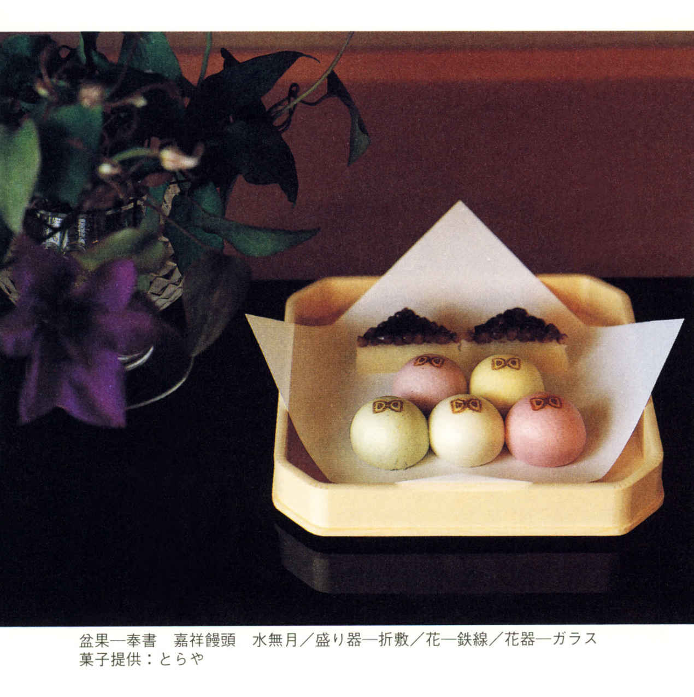
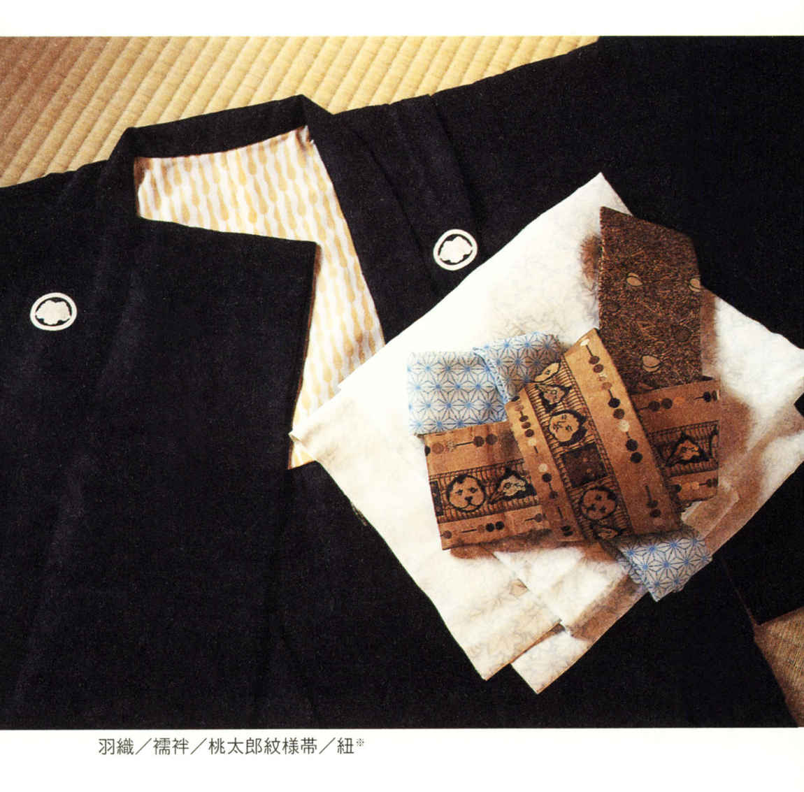
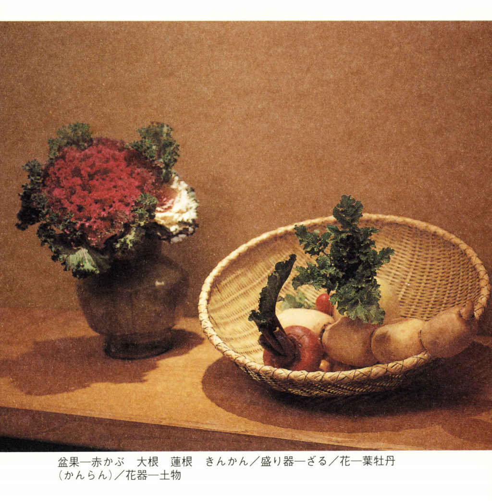

| 「四季の行事」のおもてなし (PHPエル新書) | |
| 山本 三千子 | |
| PHP研究所 (2002) | |

「四季の行事」のおもてなし
和の心を暮らしに活かす「室 礼 」入門
山本三千子
はじめに
確か小学校の低学年の頃だったと思います。ご近所のお医者さまのお宅から、ひな祭りのご招待を受けたことがありました。一緒に行くはずだった母が、どういうわけか行けなくなり、私がたった一人でおたずねしました。
それは大きなお屋敷でした。私の田舎は月おくれのひな祭りでしたから四月に入っていたと思いますが、庭のあちこちにまだ雪が残っていたことを覚えています。お庭には小さな橋まであるような、そんなお宅です。よそ行きの着物を着せられた私は、ただでさえしゃちほこばっていたのに、立派なおうちのたたずまいに気 後 れして、カチカチに緊張してしまったものです。
案内されたのは、何十畳もあろうかと思われる広い日本間でした。
「どうぞ」と襖 が開けられた瞬間目に飛びこんできたのは、天井まで届くかというぐらいの、それは立派なおひなさまの段飾りでした。
いっぱいに敷き詰められた緋 毛 氈 の赤色の晴れがましく華やかだったこと、ひな壇の下にたくさん並べられていたかわいらしい人形や、たくさんのお菓子をお供えした美しい器などなど。私はその様子にただただ圧倒されてしまいました。
たった一人きりの、しかもこちらはほんの子どもだというのに、ご家族が全員で尺八やお琴で祭りの演奏をしてくださいました。
どんな小さな客人も、大切に丁寧におもてなしをする。そこには、普段とは違う〝ハレの日（めでたい日） 〟特有の心地よい緊張感と、行事＝「事を行う」を全うしようとする日本人のひたむきさや生真面目さを感じ取ることができます。
幼かった私にも、ご家族の思いが伝わってきました。うれしいようなくすぐったいような気持ちで、神妙な顔をしてその場に座っていたことを覚えています。
今でもひな祭りの季節になると、あの緋毛氈の〝赤〟とお部屋いっぱいの立派な室 礼 、そして、そこに流れた独特の〝気〟のようなものを鮮やかに思い出します。
お風呂に入って真新しい晴れ着に身を包んだお正月の朝のこと。いつもとはちょっと違うきりりと甲高い声で「鬼は外、福は内」と節分の豆をまいた、父の背中......。
幼い記憶をたどれば、故郷の季節の移ろいとともに、他にもさまざまな年中行事の情景が浮かんできます。
ご先祖さまをお迎えするために軒下で焚 いたおがらの火......。月明かりに照らされてほの白く光る十五夜のお団子。
こうした行事の一つひとつが日本人の暮らしの節目であり、人生の節目でした。私たちは、そこに美しさや安らぎを感じ、そこで感謝や祈りを学んだのです。考えてみれば、なんと豊かな時代を生きてきたことでしょう。
しかし、その後、私たち日本人は、今度は別の豊かさを求めて走り続けました。驚異的な経済成長を遂げ、欧米風のライフスタイルが定着すると、ハレの日の小さな興奮や、家庭の中にあったあのひそやかな幸福は次第に忘れ去られていきました。日本人の家族共通の感性、〝共通分母〟を失ってしまいました。
年中行事の場であった家庭や隣人、村社会は次第に解体されていきました。自然が失われ、核家族化が進み、地域の村は過疎の道をたどり始めました。それでも豊富なモノに囲まれて私たちは幸せだったはずなのです。
ところが戦後五十余年、現代に生きる私たちは、今立ち止まり戸惑っています。
本当の豊かさとは何？ 幸福とは何だったのだろう。
〝癒し〟という言葉がこれだけもてはやされることからもわかるように、自分と向き合い、心を満たすことの大切さに、多くの人が気づき始めているのです。
恥ずかしいことに、私自身、いつの日からか、あの幼い頃の美しい記憶を、「古くさいこと」として否定して生きてきてしまったような気がします。子どもたちの世代へ引き継いであげられるものが何もないと気づいた時、〝温故知新〟という言葉の本当の意味に胸をつかれました。
こんな時代だからこそ、もう一度、年中行事に注目してみたいと考えています。
『日本民俗事典』によりますと、年中行事とは「毎年同じ暦時に同じ様式の習慣的な営みがくりかえされるような伝承的行事」と解説されています。
毎年、毎年、ただ同じことを連綿と繰り返す、現代人には一見「つまらない、飽きてしまう」と思えるかもしれないこの行いですが、繰り返されて伝わってきているから、そこに一つの揺らぐことのない精神の高さが存在していると思えるのです。
先人たちは四季折々の自然と向き合い、自然の中に美を見いだし、時に自然を畏怖し、決しておごることなく、破壊することなく自然とともに生きてきました。年中行事は、そんな暮らしが生んだ一つの生活文化。そして、私がライフワークとしております「室礼」は、その行事のもてなしの心を形に表すものです。
現在「もてなし」という言葉は食に関係する時に多く使われていますが、本来もてなしとはそれだけでなく、行事のための室礼や人々の振舞も含まれていました。先人たちの幅広いもてなしの文化の記憶を思い起こしてみたいと思います。
幼い頃経験した、あの晴れがましさ、心が震えたあの瞬間。
「ああ、日本っていいなあ」
つぶやきでもいい。そんな思いを一人でも多くの方にお伝えできれば幸いです。
祖先から与えられた素晴らしい財産に、一 時 背を向けてしまったことへの懺悔の気持ちで、この本を書かせていただきました。
「四季の行事」のおもてなし もくじ
写真◎中道順詩（無印）
秋元良平（※印）
田中俊司（※※印）
飯島 浩（※※※印）
勘田義治（※※※※印）
「室礼」は心との対話
行事は自然と祖霊への感謝や祈りから生まれた
そもそも年中行事は、農耕民族である日本人の生活と深く結びついていました。
まず、農作物の豊作のためには、安定した自然条件が必要です。天候の不順は、即、凶作につながり、それは生存の危機に発展するほどの大きな問題です。人々は祈るような気持ちで空を見上げたことでしょう。その素朴な「祈り」は、信仰と言ってもいいのではないでしょうか。
やがてそれは、山の神、田の神、水の神、火の神などさまざまな神を自然界に想定し、それを崇め、豊作を祈願し、感謝をささげる儀礼となりました。そして、こうした儀礼が、今度は四季折々の節目と対応しながら行事となって、人々の暮らしに定着したのです。
行事の根底に流れるのは、自然に対する信仰心だけではありません。お正月やお盆の行事に代表されるように、亡くなった人、つまり祖霊をお迎えし、感謝と祈りをささげるという細やかな心もまたそこにあるのです。
自然にしても祖霊にしても、人智を超えたもの、簡単に言えば目には見えないものです。
今ここにあって手にすることのできるものの価値を見いだすのは比較的簡単ですが、目に見えないものと向き合い、そこに思いを馳せるということ......それは少し高い精神性を必要とします。
風の音を聞き、空気の流れを読み、先祖の気配を感じ、手を合わせる。それは宗教心とは少し違って、日本人がもともと持っていた豊かな感性なのだという気がします。
たとえば、端午の節供にいただく柏餅を思い起こしてみてください。なぜあのお菓子に柏の葉を使うのでしょうか。
柏の木の親葉は、新しい芽が生長するまで決して地に落ちず、新芽を守ると言います。その木の習性に、先人は、親が子を守る心を見つけたからなのだとか。
なんという深い観察力なのでしょう。初めてその話をうかがった時、私は、かつての日本人のものを見る目の素晴らしさと、そこにさまざまな意味を見いだす洞察力や想像力の豊かさに驚き、感動してしまいました。私など、半分枯れた葉がバサバサと生い茂った様子だけを見て「きたない葉」と内心思っていたのですから、なんとも無粋でお恥ずかしい限りです。
現代に生きる私たちは、セカセカと忙しく日々を過ごすうちに、ふと立ち止まって道端に咲く花に目を向ける余裕すら失ってしまいました。その分、感性も鈍くなってしまったような気がして仕方がありません。
「はじめに」で〝懺悔〟という言葉を使ったのは、実は、そんなことへの自戒の意味も込めています。
井戸から水を汲み、竈 に火をおこし、お月見には野に出てススキを刈り、米の粉を練ってお団子を作り、畑で育てた衣かつぎ（里芋） を掘って天にお供えする。今風に言えば、さしずめ〝スローフード〟といったところでしょうが、これだけのことを昔の日本人は当たり前のようにただ淡々とこなしてきたのです。スーパーで買ってきたお団子で済ますというのとは、暮らしにかける時間もエネルギーも違えば、何よりその志の高さが全然違うのです。
そうした親や祖父母の暮らし方やものの考え方を、「古い」というだけで拒否し、捨て去ってしまった私たち世代の責任を、今になって痛感させられます。
丁寧に一つひとつの〝事を行う（＝行事） 〟ことで、自然の恩恵に気づき、大いなる力の存在を認め、心と魂を高める。年中行事は、毎年毎年繰り返され、長い時間を経て築き上げられた日本人の精神文化の結集なのです。
目に見えないものと向き合うとは、つまるところ、自分自身と向き合うことに他なりません。事を行う中で、私たちは「どう生きたらいいのか」を考えるチャンスを与えていただいているとも言えるのです。
「ただ伝統だから、しきたりだからというだけで、なぜこれを行わなければならないの？」
と、意味や理由を探したくなる方もいるかもしれません。
けれど、そのような知的探求だけでなく、まずは謙虚に具体的な行動を始めて行事に向かい合ってみてほしいのです。年中行事は、決して古臭い過去の遺物ではなく、現代に生きる私たちが探し求める〝何か〟を見つける指標となってくれるかもしれません。
「室礼」は、現世と天界に通じるおもてなし術
「室礼」は、動詞にすれば「しつらえる（設える） 」ことで、目的に合わせて「整える」とか「飾りつける」などの意味を持った言葉です。
京都造形芸術大学学長の芳賀徹先生は、拙著『室礼十二ヶ月』（叢文社） に玉稿「夢想のための一隅」をお寄せくださり、その中で、「室礼」について「すでに平安時代から、宮中の晴れの儀式、祝祭日などに、寝殿内に調度、装束、膳所具などの類を特別に飾り配して、これを『室礼』といったという。鎌倉、室町になるとこれらに絵画作品や香や瓶花も加えてデザインされるようになった」と解説してくださいました。
『源氏物語』の中には、「しつらって源氏の君をお待ちする」宮中の女性たちの姿が描かれており、「室礼」には人を〝もてなす〟心、〝ふるまう〟心が込められていることがわかります。
私がご指導をいただいた南宗瓶華四世、故喜芳軒田川松雨先生は、広い範囲で「室礼」を実践された方ですが、その先生のお仕事の一つに各界のトップの方々の暮らしに関係する衣食住の総合監修をされるということがありました。
たとえば閣僚入りして初登庁する時の政治家のお召しものから、お住まいの「室礼」までも手がけられたこともあったそうです。
玄関の前に置いた手桶にたくさんの菖 蒲 を活けて、奥さまが着物姿でお見送りする中、先生があつらえられた紋付き袴姿の大臣が大勢の記者に囲まれてお出かけになります。菖蒲は、「尚武（武を尊ぶこと） 」であり、「勝負」を表すものでもあります。まさに志高く「いざ行かん」という大臣の門出にふさわしい演出です。
日本人の精神のなんと美しいことかと感嘆の声が寄せられたそうです。
「室礼」の心が世界に紹介された瞬間でした。
さて、「室礼」は〝もてなす〟心と書きましたが、そのおもてなしは、必ずしも今生きている人間だけを対象としているのではありません。前にも書きましたように、祖霊をお迎えしおもてなしするという習慣が、行事の中には脈々と息づいているのです。
けれど、今日では仏壇のないお宅も多く、祖霊をお迎えすると言っても今ひとつピンとこないとおっしゃる方も多いでしょう。
私自身もそうでした。
一九八五年八月十二日、日航ジャンボ機の御 巣 鷹 山 墜落事故で、多くの方々の貴重な命が奪われました。私の夫もその犠牲者の一人でした。梅雨が明ける頃、「またあの暑い夏が来る」と、重い思いで心がおしつぶされそうな気分になり、ふさぎがちになってしまいます。
でも、それ以来、仏壇に花を供え、水やお膳をあげて手を合わせるという毎日の行いが、私にとって意味あるものに変わりました。亡くなった人が帰ってくるというお盆の行事は、夫との対話の時間となりました。
近しい人の忘れの悲しみは、なかなか癒えるものではありません。だからこそ先人は、こうした行事を行うことで、悲しみの中にも安らぎを見いだす術 としたのではないのか。より平安に生きるための知恵なのではないのかと考えるようになりました。
私が「室礼」ということを考えるようになったのも、夫の死が契機でした。
実は真新しい位牌を仏壇におさめる時、私はそれをいったいどの位置に置けばいいのかわからなかったのです。中央にご本尊さまがあり、すでに先祖の位牌も数柱並んでいます。悩んだ末に、ご本尊さまの前の中央に置きました。
ところが、それを見た義母が、最下段の向かって左側に位牌を移動させたのです。それを見てハッとしました。なるほど、ご本尊さまの真ん前に置くのは失礼に当たることなのだと。後でわかったのは、あの時義母が向かって左側に置いたのは、平安の昔から左が上位とされているからだということでした。向かって左は、ご本尊さまから見れば右側です。天界に入ったばかりの夫の位牌は、先に入っているご先祖さまより下段のさらに下座にあるべきということでした。幸いなことに、これがこの後学ぶこととなった「室礼」の基本となるべき一つの形だったのです。
「季節」を盛る、「心」を盛る、「言葉」を盛る
「室礼」の世界では、お祝いの心や感謝の気持ちを言葉や品物に託す時、飾るという表現は使わず「盛 る」と言います。
たとえばお正月に、鏡餅と五 万 米 （田作り） と勝 栗 （栗を干して臼でつき、皮と渋皮をとったもの） を鏡型の板にしつらえたとします。これを「盛りもの」と表現します。
餅は稲の霊が宿っているハレの日の食べもので、食べると生命力が与えられると言われるもの。五万米は豊穣や子孫繁栄を願うもの。そして勝栗は勝利を表現するもの。これらを鏡型の板に盛ることで、この「盛りもの」は、「人の鏡（手本） になりますように」との願いがさらに込められたことになります。
他にも旬の農作物を盛れば、季節感を表すことになり、お正月の花である南天からは「難」を「転」じますようにとの祈りが読みとれるなど、「盛りもの」には、「季節」と「心」と「言葉」を盛ります。
柳は「屋 内 喜 」と書いて家の内に喜びが訪れるようにと読み、昆布は「喜ぶ」。竹は「チク」と読むことから、転じて「祝（シュク） 」と解釈するなど、語呂合わせのようでいて、そこにさまざまなメッセージが託されているのですから、知れば知るほど奥の深い楽しい世界です。
盛りものの「盛る」という文字がしっかりその内容を示している、ということを室礼を始めて少し時間が過ぎた頃に気づきました。この文字は〝成〟と〝皿〟でできています。つまり、物事を成し得ますようにとの願いの心、また、成し得た後の感謝の心が皿の上にある、ということです。心、言葉、文字、漢字の中に込められたこれらのつながりを忘れていました。
けれど、「室礼」は決して理屈っぽく難しいものではありません。
「節分の時に盛る柊 と鰯 の頭にはどんな意味があるの？」と考えてみるのもいいのですが、「意味はわからないけれど、なんだか雰囲気が面白くていいわ」でもいいのです。
どんな盛りものも、盛り手側の意図が一〇〇パーセント理解されなくてはいけないわけではありません。受け手が自由に解釈できる風通しのよさを残しておくのも、「室礼」の楽しさ。午 年の「盛りもの」に馬具の図柄をモチーフにしているエルメスのスカーフを使ってみるのもいいアイディアでしょう。すべてを伝統そのままにしなくても、そこに現代風の解釈を取り入れることで、形骸化しがちな年中行事に新しい風が吹くのではないでしょうか。長い歴史の経過の中で、年中行事の行われ方や室礼も時代に従って変わってきたからこそ、今まで続いてきたと考えられます。
息子が高校生の時のことです。近くに住む息子の友だちがわが家へ遊びに来たことがありました。ちょうど年末の「室礼」で「運 盛り」という大きな桜島大根を使った「盛りもの」を座敷にしたところでした。これは「大根」のように語尾に「ん」の付く野菜や果物を盛り合わせ、未来の好運を願うという楽しい盛りものです。
ところがその友だちのお母さまから電話をいただきました。
「おばさまは、おじさまが亡くなって少しおかしくなってしまったんじゃないか。だって部屋の中に大根が転がってるんだよ。やっぱり絶対ヘンだよ」
と心配していたとおっしゃるのです。これにはお母さまと一緒に大笑いしてしまいました。現代っ子には、やはり大根は大根としか解釈できないのですね。無理もありませんが。
もの言わぬもので行事の心を語る
「室礼」にはさまざまな道具が登場します。そこで、少し道具の話をいたしましょう。
夫の実家は、昔、新潟の機 織 りを生 業 とする家でした。家に伝わり残っている道具は商家ですから、華やかなものはありません。美しく輝く漆の器もなければ、金箔の入ったお茶碗もありません。白木か、せいぜいつや消しの塗りぐらい。それでもハレの日にはお客さまを多く迎えますので、五十人分ぐらいの重箱や皿などがありました。どれも丹念に磨かれて、非常に大事にしまわれていたことがわかりました。そして、それらの道具類はとてもシンプルで、なんとも言えない美しさと力強さがありました。
器に力があると、そこに盛りつける料理も自然とそれに負けない力強いものになります。大きな古伊万里の鉢に盛られたお芋の煮っ転がしなど、料理は決して洗練されてはいないのですが、そこに、大勢のお客さまを迎える、質素であっても礼をつくした商家独特の暮らしぶりがうかがえました。
道具とは、そのようなものではないでしょうか。
たとえばすり鉢一つとりましても、私の家にあるものは茶色の普通のすり鉢ですが、七夕の行事の折さるご高名な方のお宅へうかがいましたら、繊細な染め付けのすり鉢を室礼に使っていらっしゃいました。
どちらがいいというわけではありません。商家には商家の暮らしに合った道具があるように、庶民は庶民の道具でいいのです。分相応という言葉がありますが、大切なのは、その分に合った道具を、大切に使うということなのです。
分と申しましても、お金があるとかないとかではありません。その家の暮らしのスタイルとでも言うのでしょうか。
さまざまな情報が飛び交う現代では、インテリア関連の雑誌やテーブル・コーディネイトの本などもたくさんあり、「ああ、この器もステキ、こんな花瓶があったらうちのリビングももっときれいになるのに」と、あれもこれもほしくなってしまいます。
けれど、華やかなものでなくても、贅沢なものでなくても、その家のスタイルに合った道具を使っていれば、家の内の統一がとれ、美しい暮らしができてくると思うのです。
私自身、まだ若い頃「何かお道具がほしい」と思うと、どうしても分不相応なものに目がいってしまったものです。二十代そこそこで、その時には、それこそ清水の舞台から飛び降りる覚悟で一つの器を求めました。でも、それは後になり家の内の他のものとの調和がよろしくないことに気づかされました。
一枚のお盆があれば充分です。お盆はそもそもお供えする道具のことを言います。でも私たちはつい不遜にも、次のように考えてしまいがちです。
「もっといいお道具があれば、素晴らしい『室礼』ができるのに」
「あのお道具がないから、『室礼』ができないわ」
けれど、それは道具にただ振り回されていることになります。
たとえどんなに由緒があり高価な道具でも、美術館や博物館に置かれているような道具は、単なる〝もの〟になってしまいます。
「室礼」は、もの言わぬものを通して、形のない行事の精神を表すことです。
だからこそ「室礼」で使う道具は、魂の入ったものでなければなりません。そして、魂の入った道具とは、暮らしの中で慈しみ、大切に使われてきたもののことなのです。
「料理の具は人の命を保つ具です。道具の具は人生の道を教え示してくれる具です」
とは、私が師事いたしましたご宗家のお言葉です。
ちなみにご宗家は、また、こんなこともご指導くださいました。
「道具を買う時は、それが一つの目的にしか使えないものならやめておきなさい。少なくとも三通りに使える道具なら求めてもよろしいでしょう」
「道具は使うもので道具に振り回されてはなりません」
今、教室にいらっしゃる生徒さんに話しておりますのは、実は、ご宗家のお教えをお伝えしているというわけです。
繰り返し行うことが〝家風〟を形作る
今の子どもたちが行事を知らないまま育ってしまったのは、やはり伝統を拒否し、外の世界にばかり目を向けてきた私たち世代の責任かもしれません。
かつては祖父母から両親、そして子どもたちへと、その家独自の暮らし方や習慣が幾世代にも亘って受け継がれ、それが目には見えないその家の〝家 風 〟を形作ってきました。家族が協力し行ってきた清掃や飾りつけ、料理、接客等々の総合された住まい方が、現在は各パーツ、部分ごとに分解されてしまいました。また、さまざまな娯楽や〝食〟の楽しみが家庭の外で手に入るようになると、その便利さ、手軽さに魅了されて私たちは伝統の家庭内行事を放棄してしまったのです。その結果、親が子へと伝えるはずの暮らしの文化がプツリと途絶え、同時に、今ここに生きているのは、先祖から連綿と受け継いだ命の火があるからだ、という自分自身の精神的根っこも失いつつあるような気がしてなりません。
そう考えると、昔の人は実に巧みに子どもたちに根っこ探しをさせていたのだなということがわかります。
お盆になると、親は、子どもたちと一緒になって茄 子 やキュウリに足をつける作業をしながら、
「このお馬さん、牛さんに乗って、ご先祖さまがお帰りになるのよ」
「お盆のお花は、亡くなられたお祖父さま、お父さんが道に迷わずおうちに帰っていらっしゃるための道しるべよ」
などと、物語をつむぎました。子どもは意味がわからなくても、しつらえる楽しさとともに自分のルーツに思いを馳せるのです。
このように「つながり」を意識することが、四季折々の「室礼」をする醍醐味とも言えるでしょう。
一年がつつがなく終わった時、また無事に次の一年へとつながっていくように祈る。親から子へ無事に命がつながっていくことを祈る。
「室礼」は生きることへの賛歌でもあるのです。
そう言えば、仏壇に毎日お供えする水にも、同じような意味が込められていたことに気づかされます。水は蒸発して気体となりますが、再び水に戻るという循環を繰り返しています。仏教の言葉で言えば「輪 廻 」であり、未来永劫につながっていく再生のストーリーを表しているのです。
毎年毎年同じことを繰り返すのはつまらないかもしれません。けれど、繰り返すからこそ、そこに「つながり」が生まれるのです。同じことを繰り返すからこそ、去年とは違う成長した自分を感じとることもできるのです。
核家族化が進んだ現代、三世代のつながりの中で年中行事を伝承していくのは難しくなりました。それならば、タテのつながりでなくても、ヨコのつながりであってもいいのではないかと考えています。タテのつながりが血族のつながりであるとすれば、ヨコのつながりとは時空を共にする同好の人たちのつながりとも申しましょうか。
「日本に生まれてよかった」
そんな思いを共有しながら、今こそ、年中行事の「室礼」を、現代生活によみがえらせたいと思うのです。
次の章からは、十二ヵ月の「室礼」の実際について、それぞれ例をあげながら書き進めていきたいと思っております。
すべてを取り入れる必要はありません。
たとえば九月のお月見なら「お月さまを眺めながらお酒でもいただこうか」と、ホームパーティーのお誘いのきっかけにするのもよいでしょう。三月のひな祭りなら「桃の節供のディナー」と銘打って、そのテーブル・コーディネイトにひな祭りの「室礼」をちょっとだけ取り入れてみるのも楽しそうです。
また、お呼ばれなどされた時、「そろそろ、お月見の季節ですので」と、お月見の行事にちなんだものやお花を持参したりすれば、なんとも粋ではありませんか。
それぞれの解釈で、それぞれの「室礼」にチャレンジしてみていただければ幸いです。
室礼 ――お正月から大晦日まで
一月◇ お正月
新しい年の再生を祝い、つつがない一年を祈る
新年の訪れは、人の心を浮き立たせてくれます。これからが寒中という厳しい時であっても、「どうぞ本年がよい年でありますように」との願いと、新しい一年への決意が、私たちの身を引きしめます。
【年神さまをお迎えする】
そもそもお正月とは、年 神 さまを迎えて、昨年の実りと平穏に感謝し、新しい年の豊穣と平安を祈念する行事でした。
もちろん年神さまと言っても、実際にその姿が目に見えるわけではありません。そのため、かつては日本各地で興味深い風習があったようです。
たとえば宮城県では、大晦日の夜、その家の主 が、いったん家から出て再び敷地に入り、神さまに成り代わって「今夜はどこに泊まるべや」と言いながら屋敷の周りを歩くというならわしがあったそうです。家の中からは「おら家で年取らえ」という声がして、これをもって神迎えとしたのです。
徳島県では大晦日の夕暮れに、門のところで「ござれ、ござれ」と扇子を広げて神さまをお迎えしたという話もあります。
こうした大人の行いを見ることで、戦前の子どもたちは、年神さまの存在を信じたのでしょう。これが西洋なら、さしずめクリスマスのサンタクロースというところでしょうか。
鏡餅は年神さまへのお供えものであり、神さまにお供えする料理がお節料理、供 物 を分かちいただいたものがお年玉です。また家の門口に立てる門松は、依 代 （神さまがやどるもの） と考えられていました。注 連 飾 りは、災いが家の中に入らないようにするおまじない（結 界 ） の意味を持っています。
【お正月の象徴、鏡餅】
お正月の「室礼」の中心となるのは、やはり鏡餅でしょう。鏡はいにしえより神さまの宿るところであり、神社では御神体として祭るものでもあります。そして餅には稲の霊が宿っているとされ、食べると生命力が与えられるハレの日の食べものと言われています。
この二つの意味を併せ持つ鏡餅を年神さまにお供えし、その年の豊作と家族の健康を祈るのです。
最近では地方でも餅つきをするご家庭は少なくなったかと思いますが、人の手でつき、人の手で作られた鏡餅は本当にふくよかです。和菓子屋さんなどで買ってきた鏡餅は平たくてモダンですが、あの自然にふっくらとした鏡餅の力強い美しさには、やはりかなうものはありません。
鏡餅を二つ重ねる理由はさまざまに考えられています。「福と徳」が〝重なる〟ようにとの願いが込められているという説もあれば、古来中国から伝わった陰 陽 を表すものだとの説もあります。
陰陽道では、数字の偶数が「陰」であり、奇数が「陽」とされています。鏡餅が二つあれば、偶数ですから「陰」数となってしまいますが、二つで陰陽の一組なのだから奇数ととらえて、「陽」数だと解釈するのだそうです。
あまり難しく考えず、お子さまのいるご家庭では、
「人の鏡になるようにとの願いが形になったものが鏡餅ですよ」
「鏡のように澄んだ心で新年をお迎えしましょうね」
などと語り合うのも楽しいものです。
【めでたさを表す盛りものいろいろ】
お正月の「室礼」では、さまざまな「めでたい」と言われるもので盛りものをしつらえます。
その代表的なものの一つが柑 橘 類です。柑橘の「きつ」は吉日の「吉」に通じるとして、形が大きければ大きいほど「大吉」につながると考えられています。
この時期には「仏」の「手」と書いて仏 手 柑 と呼ばれるものが出回りますが、これなどはまさに柑橘類の王者。いかにも風格があり、大変美しくおめでたいものです。仏手柑は舞っている手の姿とも見ることができます。お正月のような祝いの席には〝舞手柑〟として使います。
ちょっとお正月の行事の話からは離れますが、この時期には還暦や長寿を祝う会をされる方がいます。そのお祝いの席を訪問する際、この柑橘類を手みやげになさったらいかがでしょう。相手がお年を召した方であればあるほど大きなものを用意すると、縁起ものとして大変喜ばれると思います。
さて、お正月によく使われる橙 は、「代々家が続きますように」との願いを込める一品です。一度実がなると七年は落下せずに復活再生を繰り返して生きながらえるところからも、縁起がよく、新年にふさわしいものとされています。
ウラジロは、二つの葉が向き合っているところから別名を「諸 向 き草」と言い、「夫婦が向かい合って仲よく暮らせますように」とか「ともに白髪が生えるまで」の長寿を表すと解釈されています。また、葉の裏が文字どおり白いところから身の潔白の意も含みます。
譲 葉 は、別名が「親子草」です。親から子へまさに命を〝譲って〟、子孫が長く続くことを祈ります。
鏡餅の盛りものには、五万米（田作り） や勝栗、黒豆と一緒にコロ柿を盛ることもあります。そもそも柿は「嘉来」と書いて「喜びが来る」とするおめでたいものですが、コロ柿は「カラスも食べないような渋柿でも、修練の末には床の間の飾りものにもなりうる」と、高い精神性を表現していると考えていいでしょう。
柿は、一本の串の左右、外側に二個ずつ、内側に六個並べて一貫統一の心で串を通し、「外にニコニコ、内むつまじく」の願いを形にして鏡餅の上にしつらえる家もあります。
何かこじつけのような、単なる語呂合わせのような感じがするかもしれません。けれど、これが日本人がもともと持っていた言葉の文化なのだと考えてみてください。
〝もの言わぬもの〟に思いを託す〝寄 物 陳 思 〟の表現方法ですが、なんと高度で豊かな感性ではありませんか。
柑橘類や赤かぶなどの芽が出たものを使った盛りものを、玄関先の飾り棚にしつらえることもあります。芽が出たものは、「おめでとうございます」の意味。それだけで来客に対する主の心を表現します。
明治の頃には、来客の多い家などで、その盛りものの脇に名刺受けを置く室礼をされる家もあったそうです。こうすることで、新年の挨拶に訪れた人が玄関にたくさんの履物を見た場合、名刺だけを残して、面と向かったご挨拶を遠慮して帰られたとか。迎える側、訪れる側、双方に共通の理解がなければ成り立たない、これも少し前の日本ならではのもてなし、ふるまいの形です。
他にも、長寿を表す海老や、一つの球から二つの芽を出すところから和合を象徴すると言われる百合根、シシトウガラシなどもお正月の盛りものにはよく使われます。シシトウガラシは、「シシ」が、家を守る「獅子」と同音であるところから縁起ものとされています。獅子は一対で守り神となりますから、シシトウガラシは必ず二個盛ることを忘れないでください。
〝寄物陳思〟を非常に楽しく実践できるのが、初夢をテーマにした「室礼」です。鏡型の板に、最も縁起のいい夢と言われる「一富士、二鷹、三茄子 」の盛りものをしますが、これなど本当に自由な発想でしつらえてくださればいいのです。
たとえば「一富士」は、富士りんごを一つ、「二鷹」は、食材の鷹のつめを二本、「三茄子」には、茄子の形をした和菓子を三個という具合に。自分たちの、また、お正月にお泊まりになるお客さまの寝室などにしつらえます。
「一富士、二鷹、三茄子」は、一に富士山のように気高く、二に鷹のように勇敢に、三に、千に一つの無駄もなく花が結果する茄子のように志をまっとうするという意味です。
さて、お客さまは、どんな初夢をご覧になるのでしょうか。
【床の間は、神さまとの対面の場】
最近とても残念に思うのは、日本の住宅から床の間が消えてしまったことです。
「室礼」は洋風のお宅のサイドボードやダイニングテーブルなど、どんな小さな場所にでもそれなりにふさわしくしつらえることができます。けれど、やはり床の間にしつらえた時の、身が引き締まるような静かな美しさは、他とは比べようのない何かを感じさせてくれます。
かつて、床の間は、神さまと私たち人間が対面できる場所と考えられていました。
床 框 （床の間の前端の化粧横木） は平面上の、そして落とし掛け（上に掛け渡した横木） は空間の中での、天上と私たちの境界線を表しています。この境界線のことを結 界 と呼びます。
こうしたことを踏まえ、お正月の年神さまが天から降りていらっしゃるという古来の考え方を形に表すことをテーマとしますと、神さまが降りていらっしゃる様子を表現するのに使われるのが柳です。
柳は植物の中で一番水分が多く含まれていることから、火 防 せを託した飾りでもありますが、前にも書いたように「屋内喜」に音が通じることから、家内安全の喜びを表すものでもあります。
この柳を落とし掛けの上部に取り付けた青竹に活けて、そこから垂直に下がるようにします。これで天から神さまが降りていらっしゃる形となります。
その降りてきた柳の途中か下部に必ず輪の形をつくります。神さまと私たちの和合の形です。この様な室礼をいたします時に、やはり床の間のしかけの力を失いたくないとしみじみ思うのです。
さて、お正月の「室礼」でメインとなる道具と言えば、三 方 （白木で作られているお供えをするためのもの） です。塗りの三方もありますが、やはり行事の時には白木のものが神聖な美しさをかもし出します。
三方には奉 書 （文字どおり「奉る」時に用いる和紙。文房具店などで手に入ります） を敷いて、その上に盛りものをします。
三方は、真っ白な瓶 子 とともに、伝統的な神事には欠かせない道具です。これらの道具を使って床の間をしつらえた時、清らかな祈りの心が美しい形となり、室内に静けさが生まれます。
若い方々が、「なんてシンプルでモダンでしょう」とおっしゃいます。「古典は限りなくモダンです」とはご宗家のお言葉でした。
【究極のおもてなし、お節料理】
五穀をつかさどり、家と家族に「福運」をもたらす年神さまをお迎えすることが、お正月の本来の意味です。その年神さまをおもてなしするために、私たちは、餅や農作物、海産物など、さまざまなものを用意します。このお供えものが、現代で言うお節料理です。
神仏へお節料理をお供えする時は、四角いものは丸いお皿へ、丸いものは四角いお皿へ盛るのが基本です。
そう言えば、昔、母からそんなことを教わったような気がします。幼い頃は理由もわからず、それはただ体にしみついた暮らしのルールでした。後になって、四角と丸の組み合わせで陰陽を表すという古来の思想がもとになっていたことがわかると、毎日の生活の中で自然に大切なことを伝えていく生き様に、あらためて頭の下がる思いがします。
お節料理を重箱に盛る時は、使用する重箱は、外が黒色、内が朱色の四段が正式だと言われています。完全を表す数「三」の上にさらに一段加えることになりますが、これは「加上の理論」からきていると聞いています。日本酒に二級、一級、特級、さらに超特級がありましたが、これも同意ということです。
一般的に一の重（一番上の重） は三つ肴 を中心とした「祝い肴」、二の重は酢のもの、三の重は焼きものや海の幸、与（四） の重は山の幸の煮ものが中心となり、お重にいれる料理の品数は奇数がよいとされています。
一の重にいれる「祝い肴」は、黒豆、数の子、それに関東では五万米、関西では牛 蒡 の三品です。
お節料理に使われる食品も、前にも記したような〝寄物陳思〟の表現方法が生かされており、幸福を祈念しながら一品一品と丁寧に向き合ってきた先人の思いが伝わってきます。
ここにその代表的な食品の由来を書いてみたいと思います。「室礼」では、これらのものに込められた心を盛ります。
黒豆...... まめ（健康） に暮らせますようにとの願いが込められています
数の子...... 数の子はにしんの子ですが、にしんは別名「春 告 魚 」とも言い、春の使者の意味から、おめでたい魚と考えられています。また数の子はたくさんの卵が集まっていることから子孫繁栄を表します
たたき牛蒡...... 黒豆も同じですが、黒い色は聖なる色と考えられています
海老...... 腰が曲がるまでの長寿を願います。脱皮は生命の更新を象徴するとされ、長寿を表す縁起ものの代表格です
慈姑 ...... 毎年芽が出るようにとの願望を表します。別名を「地 栗 」と言い、水中の芽の代表です
鮑 ...... 鮑の肉は長く伸びることから、永続を表します。「お喜びが長く続きますように」との願いの品です
鯛...... まさに「めでたい」の「たい」として喜ばれます
柚 子 ...... 黄色は魔よけの色であり、また柚子は実に大小がないことから、作物が一斉に均一に実ってほしいという豊作祈願を表します
蒲 鉾 ...... 形が日の出に似ていることから、新春のお喜びの心を表します
最近ではお節料理をすべて手作りするというお宅は少なくなってしまったかもしれません。デパートへ行けば高級料亭のお節料理なども手軽に買うことができ、それはそれで楽しいものです。
けれど、代々受け継いできたその家のお料理方法で、コトコトと黒豆などを煮るのも、やってみるとなかなか心静かなひと時となります。ちゃんとしたレシピがあるわけでもない、ただ口伝えに聞いた味付けが、気持ちを豊かにしてくれるような感じがします。
若い人なら一品でもいいのです。これだけは手作りすると決めてチャレンジなさってみてください。行事は繰り返しの文化です。今年はうまくいかなくても、来年はもっと上手に作れるようになっているかもしれません。同じことを繰り返すからこそ、自分の成長ぶりが実感できるのです。それが行事を行うよさの一つでもあります。
神さまにお供えした後は、そのお料理を私たちが食し、神さまの力をいただきます。これを〝神 人 共 食 〟と言い、この習慣のことを〝直 会 〟と呼んでいます。
幼い頃、田舎の道端や田んぼの隅に、小さな道祖神がありました。見るとちょっとしたお菓子や野菜、果物が供えられていました。また、お客さまから頂戴したお菓子や果物など一時仏壇にお供えし、それからいただきました。暮らしの中に当たり前のように、そんな習慣が生きていました。
【お年玉と年賀状】
もともとお年玉は神さまからの賜りものと考えられ、お年玉を贈るのは大変神聖な儀式でした。
富山県では、初詣の時に神社で初穂米で作った餅を家族の人数分もらい、それを元旦に〝年玉〟と呼んでみんなで食べたと言います。九州地方では、米を白紙に入れてひねったものを〝年玉〟、島根県では、同じく白い紙に米と昆布を包んだものを〝年玉〟と呼んだとのことです。紙でひねったり包んだりするのは、中の魂が飛び散らないように封じ込めるという意味があるのでしょう。
お年玉は、まず家長が神さまから賜り、それを家族に分け与えるものでした。今も目上の人から目下の人へとお年玉が贈られるのは、そのしきたりが残っているからでしょう。
さて、このようにお年玉はもともとは金銭ではありませんでした。子どもたちが貯金ができるほどお年玉をもらっていることを聞いたら、ご先祖さまはさぞ驚くことでしょう。現在のお金のお年玉のやりとりが始まったのは、戦後になってからのことでした。
資料によれば、年賀の習慣が始まったのは、江戸時代初期だとされています。親戚や目上の人のお宅に年始のご挨拶にうかがったのが最初の形。江戸時代の終わり頃からは、人々の生活が変わって次第に年賀回りの件数が増えてきました。すると、前に書いたように玄関先での記帳や名刺を置いてくるという新しい習慣ができました。やがてこの記帳や名刺の代わりに書をしたため郵便で送るようになったのが年賀状です。元旦にまとめて配達される年賀特別郵便の制度が始まったのは明治三十二（一八九九） 年のことだそうです。
最近では印刷した年賀状やパソコンで作った年賀状が主流です。それでも時々墨痕鮮やかな毛筆の年賀状をいただくと、やはりドキッとして大変うれしいものです。新しい年の始まりです。印刷やパソコンでもいいですが、せめてそこに一行でも直筆のメッセージを入れてみてはいかがでしょう。心のこもったご挨拶になります。
【「室礼」で、心と空間のリフレッシュ】
「お正月の飾りつけはいつ行えばいいのですか？」という質問をよく受けます。
十二月二十九日は、九が「苦」に通じるところから嫌われ、三十一日に行うのは、神さまをお迎えするにしてはあまりにも急場しのぎの〝一夜飾り〟として、これも忌まれています。
そこで「二十八日か三十日が適当では」とお答えしています。
かつてはお正月に代表される神事は男性の仕事でした。女性たちは盛りものを作るところまではやっても、いざそれを神棚や床の間にしつらえるのは男性の役割だったのです。伝統的な行事の世界では、女性が神さまと対峙することはタブーとされていました。
けれど現代では、そんなしきたりにとらわれる必要はないでしょう。むしろ女性たちが率先して行うことこそ、この素晴らしい文化を後に伝える鍵になりそうです。
「床の間に簡単な盛りものをするだけ」とか、「門松はやめにして、玄関にお花を活けたいわ」など、そのお宅によってしつらえ方はさまざまでいいのです。
しつらえる空間を作ろうと思うと、年末の大掃除にもいつになく力が入ります。
「『室礼』とはおうちの片づけでもあるんですよ」
生徒さんにそう申し上げて、大笑いになることがあります。
けれど、それは本当なのです。
家の中の片づけだけではありません。行事と向き合いしつらえることは、自分自身の内面にとっても「必要なもの」と「必要のないもの」がはっきりと見えてくる一つの節目なのです。
心と空間のリフレッシュ。お正月の「室礼」もそんなふうにとらえてみると、一つひとつの事を行うのが心地よく、とても楽しくなります。
《コラム・一》
季節を表す、暮らしの言葉
「二十四節気」
一年三百六十五日を四等分したのが、春・夏・秋・冬の「季」なら、一年を十二等分したものが「月」となります。そして、月の中間で区切ったものが「二十四節気」です。
「二十四節気」のそれぞれの名称は、大変美しいものです。
たとえば春なら、「立春」「雨水」「啓蟄」「春分」「清明」「穀雨」。春の芽吹きや穏やかな陽光、地中から出てくる虫の様子......など、その字面を追うだけで、季節の移ろいが鮮やかに浮かんでくるようです。
この呼び名は中国の周王朝時代に作られたそうですが、二千年以上も昔の言葉が現在もなお輝きを失わないことに驚きと感動を覚えます。
二月◇ 節分
豆をまいて鬼退治。さあ、いよいよ新しい春
「鬼は外、福は内」の声とともに、家の中の邪気を払い、福を迎えます。この福とは、幸福の福でもあり、命をつないでくださったご先祖さまのことでもあると言います。節分は、春の季節とともに、故人をお迎えする儀式でもあるのです。
【中国から伝わった節分】
昔は節分のことを「せち分かれ」と言い、そもそも季節の分かれ目のことを示す言葉でした。ですから、立春前の節分だけでなく、立夏、立秋、立冬の前日はすべて節分。現在は春の節分だけが行事として残されました。
「明日が立春」というこの日は、新しい春が始まる大晦日、いわば年越しの日でもあります。ですから、年神さまをお迎えして新しい年の吉運を願うお正月と同じことです。
「鬼は外、福は内」のお馴染みのあのかけ声は、一年の邪気（鬼であり、冬の寒気でもあると解釈できます） を取り除いて、新しい年の福を招きいれるもの。そんなわけで、節分は、年迎えの行事でもあるのです。
この豆まきの風習は、中国から伝わった「追 儺 」の儀式に由来すると言われています。
追儺は、「鬼やらい」とも言い、疫病や災害、陰気や寒気といったものを鬼に見立てて追い払う行事で、中国では紀元前三世紀の秦の時代にすでに行われていたそうです。そしてこの時代には、豆をまくのではなく、桃の弓や葦 の矢、矛と盾などで鬼を追い出したと伝え聞きます。
日本へは遣唐使によってもたらされ、疫病の流行で大量の死者が出た時、当時の文武天皇がこの追儺を行ったのがはじめとされています。その後しだいに民間に広がり、「その昔、鞍馬の奥に人に害を与える鬼がいて、賢者がその鬼の目を三石三斗（約六百リットル） の大豆で打ち、退治した」などの説話も生まれ、いつしか豆まきの行事として定着していったのです。
【「鬼は外」の鬼の正体は？】
さて、「鬼は外」の鬼とはいったい何なのか？ そのことについてもう少し考えてみましょう。前に、鬼は疫病や災害、陰気や寒気と書きましたが、これらは目には見えないものです。けれど、私たちが「鬼」と聞いて一般的に思い描くのは、ウシの角が生えてトラのシマシマパンツをはいた、象徴的な鬼の姿ではないでしょうか。この鬼の姿こそが、中国から渡ってきたものでした。
それを説明するには、ちょっと難しいかもしれませんが、古代中国の陰陽五行説をひもとかねばなりません。「陰陽」の言葉はお正月のところにも出てきましたが、簡単には、地球上のすべてのものが「陰」と「陽」から成り立っている二元論であると考えてよいでしょう。
まず、〔図Ａ〕のように、東西南北の方位に十二支をあてはめてみてください。北の子 から始まり、丑 、寅 と続き東が卯 。次に辰 、巳 ときて南が午。未 、申 と続いて西が酉 。最後に戌 、亥 でしめられます。
次に、この図の中に〔図Ｂ〕の木火土金水の五行をあてます。
「子─水」「丑寅─土」「卯─木」「辰巳─木」「午─火」「未申─土」「酉─金」「戌亥─金」です。
「木、火」「火、土」「土、金」「金、水」「水、木」の関係は、それぞれが助け合うよい関係（相生） であると考えます。それに対して、「木、土」「土、水」「水、火」「火、金」「金、木」は、お互いに殺し合う悪い関係（相剋） とされています。
もう一度〔図Ａ〕に戻りましょう。
北は子であり五行の水「北 子─水」、東は卯であり五行の木「東 卯─木」で、その中間が丑、寅で五行の土「丑、寅─土」。この中間は、両隣の方位に対して、〔図Ｂ〕にあるように相剋の関係にあることがわかります。
北と東の中間、つまり東北の方向は、悪いところというわけです。「悪い」とは「鬼のいる場所」と解釈され、東北（＝北東） の方向は「鬼門」と呼ばれるようになりました。
さて、この鬼門の方角は十二支で言えば「丑寅」の方角でしたね。ウシとトラ。そうです。だから鬼はウシの角を持ち、トラの皮のようなシマシマパンツをはいた姿になったのです。こうして、目には見えない悪いものを、恐ろしい怪物として具象化しました。そしてそれを退治するという形で追い払い、福を呼ぼうとしたのが節分の行事なのです。
それにしても、鬼のいる鬼門の方角はいにしえの昔から大変恐れられていたようです。平安時代には、京都御所の東北にあたる比叡山に延暦寺を建てて鬼門封じとしましたし、また、江戸城の鬼門の方向には上野の寛永寺があります。いにしえの都市計画にまで、この陰陽五行説の思想が生かされていたとは、まさに驚きです。
【鬼は外、福は内】
豆をまくのは、本来その家の主人または年男の役目でした。
豆は升に入れてあらかじめ神棚にあげておき、日の落ちた夕刻から、跡取り息子を従えて、「鬼は外、福は内」と言いながら家中に豆をまきます。まく時は、窓を開け放ち、鬼を追い出すように家の奥のほうから外へ向かってまきます。
幼い頃に見た父の豆まきでは、鬼を締め出したら、二度と家の中に入ってこないように、大きな音をたてて窓や戸を閉めたものです。その後、清浄な家に福＝ご先祖さまをお迎えします。
普段はあまり話をする機会のない父ですが、豆をまく時の後姿は力強く堂々としていて、子ども心にも頼もしく思ったことを覚えています。
「なにもあんなにたくさんまかなくても。明日のお掃除が大変」
そう愚痴をこぼしながらも、楽しそうにしていた母の笑顔も忘れられません。
もちろん、家長や跡取り息子といった感覚が薄れた今では、女性も含めて家族総出で豆をまく楽しい行事となっています。
豆まきの豆は「福豆」と呼ばれています。福豆は生の豆を煎ったものですが、豆を煎るの「いる」は、矢を射るの「いる」と同音です。煎ることによって「邪気をやっつける」との意味を持たせたのではないでしょうか。
節分の夜には、「来る新春もまめ（達者） でありますように」との願いを込めて、年齢の数だけ豆を食べます。この時、実際の年より一つ多く豆を食べますが、これは昔は立春を迎えると一つ年を取ると考えられていたからです。
焼いた鰯を柊の枝にさして戸口に飾る習慣もありました。
鰯は、焼く時のイヤな臭いで鬼を追い払うため。柊は、ギザギザの形をした葉で家をのぞきに来た鬼の目を突くためというのがその解釈です。
節分の翌日は立春、春が始まる日です。この日には椿 の花を飾ります。「椿」は木へんに春と書くことから、冬の寒気を払い春になったことを示す花とされるからです。
【行事は暮らしに根づくもの】
節分の「室礼」の代表と言えば、豆、柊、鰯、あたり棒（すりこぎ） の〝節分四点セット〟です。
あたり棒は、少し前ならどこの家の台所にもあったものです。大変硬い木で作られていますから、まさに鬼を追い払うための武器と考えられます。
「こんな日常的な道具を『室礼』に使っていいんでしょうか？」と不安にお思いの方もいるかもしれません。けれど、行事は家庭内文化です。行事は本来暮らしと密着したものだったのです。とっておきの道具を使って、いくら美しくしつらえても、それが形だけになってしまったら意味がありません。お祖父さま、お祖母さまの代から使い込んだ道具を使ってこそ、代々つながっていくその家独自の文化を形作ることができるのではないでしょうか。
豆は、「室礼」に使う時は生のものを使います。豆は鬼を追い払うための武器ですから、硬くなければならないのです。「魔」の「目」を打つという意味で「まめ」とか、「魔」を「滅」する意味で「まめ」など、ここでも、ものに思いを託します。
祭事の空間でもある床の間にしつらえるのが理想ですが、床の間のないお宅ではどんな場所にしつらえてもいいのです。
こうした飾りに、鬼の面を取り入れることもあります。節分の室礼はお子さまが作った面や、画用紙に書いた鬼の絵などを使っても、愛嬌があってなかなか趣のある「室礼」になります。
以前、あるギャラリーで節分の宴を催した時、書家に書いていただいた「鬼」の一文字をパネルにしてしつらえました。見えないものを具体物をかりて表すことが室礼ですが、文字そのものは、やはり一番伝える力、感じさせる力は強く、鬼の文字に皆さんが新鮮に感じますとおっしゃってくださいました。
最近は近くのスーパーマーケット等に「節分セット」が用意されるようになってきました。何もかもできあいはどうかと思いますが、まずは、こうしたものを活用して行事をスタートさせてみましょう。
豆をまいた翌朝、家中の豆を拾い集めるひと時も昨夜の続きです。子ども心に温かな気持ちで行ったことが思い出されます。
《コラム・二》
神さまとともに祝う
「五節供」
五節供は、古来公家や武家においての公式の祝日とされた五つの節供のことです。奈良時代に定められた「節日」が元となり、江戸幕府によって制定されました。
五つの節供は、正月七日の「人 日 」、三月三日の「上 巳 」、五月五日の「端 午 」、七月七日の「七 夕 」、九月九日の「重 陽 」となります。お正月の元日が含まれていないのは、別格のものとされたためです。
これらの日も呼称も奈良時代に中国から伝わったものですが、明治時代の太陽暦採用にともない、民間の行事として日本中に広がりました。
「節供」という言葉は、「節日の供物」のことで、季節の変わり目に神に食物を供えて健康を祈願する日のことです。五節供の他には、「彼岸」「お盆」「八 朔 」「冬至」などがあります。
三月◇ ひな祭り
厄を祓って、子どもたちの幸せを願う
現代のひな祭りは人形に身体の穢れを移し、海や川に流して厄祓いをした〝流しびな〟がルーツと言われています。現在では華やかなひな祭りの行事ですが、そこには、昔の人々の自然への畏怖心と信仰の歴史が刻まれています。
【人形に穢れを移して水に流す】
三月の一番初めの巳の日（上巳） に川に入って身体の穢 れを祓 う。古代中国にあったそんな「禊 」の儀式が、日本に伝わってきたのがそもそもの始まりです。
ひな祭りを別名「上巳の節供」と呼ぶのはそのため。三月三日を「上巳」の日と定めたのは、奇数の同じ数字が重なる月日は悪いことがおこるという中国の〝重 日 思想〟によるもので、この日は厄よけが必要だと考えられたからです。
日本では、自分が水に入るのではなく、人 形 （人の身代わりのことを形 代 と言います） に疫病や穢れ、災いを移して海や川に流すという形になりました。平安時代の『源氏物語』の須磨の巻には、三月上巳、陰陽師を召してお祓いをした人形を、光源氏が船に乗せて流すというくだりが出てきます。
これがいわゆる〝流しびな〟です。現在でもこうした風習が残っている地域は日本各地にあると聞きます。ひな祭りの「室礼」では、この〝流しびな〟を形にして飾ることもあります。
さて、そもそも形代とは、木や紙や草で作られたものでした。
やがてそれが白い布で作られた幼児形のぬいぐるみとなり、水に流すのではなく、お守りとして枕元などに置かれるようになりました。ぬいぐるみには次第に美しい衣装が着せられるようになり、より装飾的となり、今日のような「人 形 」となっていきます。
ひな壇に鎮座する形でのひな人形は、徳川家康の孫である東福門院和子さまが、自身の子どものために作った座りびなが最初だったとか。一般に広がっていったのは、江戸時代になってからのことでした。
【つながりを実感する〝ひなの国見せ〟】
ひな祭りと言えば、現在は室内にひな飾りをしつらえますが、その昔は、ひな人形をたずさえて野山に出かけていくという風習がありました。
前にも書いたように「上巳」の日であり、同じ数字が重なる三月三日は一種の厄日と考えられていたため、戸外で厄祓いをする必要があったのではないでしょうか。
春の陽光のもと、小高い丘に登って簡単に座をしつらえ、そこにひなを飾って、その日は一日家族みんなで野遊びを楽しみます。まるでひな人形にも故郷の風景を見せてあげているようだからでしょうか、この行事は、「ひなの国見せ」と呼ばれていました。
座をしつらえてと言っても、特別な道具を用いたわけではないようです。その日、普段着の上に羽織った晴れ着の羽織を脱いで少し高い所に敷き、そこにひなを飾りました。この一枚が打敷となって、特別な空間が生まれるのです。
ひな人形に魂を見いだし、自分より上座にしつらえる日本女性の優しさや奥ゆかしさが伝わってくるようです。
不幸にして早世した子がいれば、その子の魂をひな人形に託し、一緒に野や山の美しさを味わいたいという家族の思い。「ひなの国見せ」には、そんな意味も込められているのです。
これに思い当たったのは、ひな祭りの飾りには不可欠な菜の花の由来を調べていた時でした。
♪あかりをつけましょ ぼんぼりに......で始まる『うれしいひなまつり』（サトウハチロー作詞／河村光陽作曲） の歌があります。あの歌詞の中には、不可欠なはずの菜の花のことが出てきません。
菜の花からは菜種油が取れますが、これは昔はお灯明（神仏に供える小さな明かりのこと） に使う油として使われました。従って、菜の花は、そのものがお灯明の象徴でもあります。菜の花を活けるのは、故人をひな祭りの宴にお迎えするという意味が込められているというわけです。
ひな祭りにも他の行事同様、故人の魂とともに生きようとする先人たちの思いが込められている......。あらためてそう感じると、一つひとつの風習やしきたりに、さまざまな意味を読みとることができるのです。
今、この「ひなの国見せ」をテーマにしつらえる時は、家具を片付けて床の間のある部屋一面を使います。
山が描かれた屏風や緑色の毛氈を使って戸外のイメージを作り、その毛氈の上にひなあられを使って、ひな人形とその家の蔵とがつながっていることがわかるような一筋の道を描きます。
今でこそ蔵のある家は珍しくなりましたが、昔は、その家の大切な家財や品物などを火災や盗難から守る大切な役割を果たしていました。蔵は、いわばその家のアイデンティティとも言えるものがしまわれている場所で、ひな人形もそこから出されては、またしまわれるという歴史を刻んできたのです。
あられで表現した一筋の道は、蔵とひな人形のつながり、そして代々受け継がれてきたその家の精神のつながりを表すもの。また、幼くして亡くなったその家の祖先の少女たちの道しるべとも考えています。ところどころに手まりを置いて、そんな子どもたちの魂とも一緒に遊びたいという気持ちを表します。
かつての「ひなの国見せ」の行事のように、ひな人形を外に連れ出して、庭の岩の上などにしつらってみるのもいいでしょう。
春の柔らかなそよ風と日差しの中で、お人形のなんと心地よさそうなこと。そのお顔がさらに柔らかく感じられるのですから、本当に不思議なものです。
「えっ？ 庭にひな人形ですか？」と不審に思われる方も、一度ぜひ試してみてください。考えてみれば、ひな人形に使われている着物地は草木染めです。その自然の色合いが、周囲の木の芽や若草の色と実に美しく調和します。お人形を、室内にある時よりむしろ身近に感じてしまうのは、私だけではないと思います。
ちなみに、私は、この「室礼」をする時には、祖母の羽織を道具の一つとして使っています。祖母が遺してくれた精神を思い浮かべることで、祖母もまたひな祭りに参加してくれているような気がして、心があたたかくなるのです。
【「流しびな」の心を「室礼」に】
「流しびな」の「室礼」では、紺色の毛氈とひなあられを使って川の流れを模します。
最初にご説明した「流しびな」の歴史をもう少し見てみますと、そこには中国で行われていた「踏 青 」という行事が浮かび上がってきます。これは、春先、青い草を踏み、川の流れで禊をし、酒を酌み交わすことで穢れを祓うというもの。後に日本において「曲 水 の宴（曲がりくねった狭い川のほとりに詠み人が座り、上流から流れてくる杯が通り過ぎないうちに詩歌を詠み、杯をとってお酒をいただくという雅やかな行事） 」へとつながったとされる行事です。
紺色の毛氈は、この「踏青」にちなんで選んだものです。
毛氈とひなあられの川は、室内における上座＝床の間を川上と見立て、そこから部屋の外に水が流れているイメージで形作りました。
ひなは、奉書で作った紙びなを額に入れ、床の間に飾りました。紙は「神」にも通じます。とても品の良いものです。
川辺には美しい桃の花が満開に咲き誇っている様子をしつらえました。
桃の花や木には、古来邪気を祓い、百鬼を制する霊力があると言われています。また、桃は暗い冬を破って、明るい花を咲かせるものです。中国では古来、嫁ぐ娘の華やいだ美しさをそんな桃の花にたとえてきました。まさにひな祭りには欠かすことのできない花なのです。三月三日が「桃の節供」と呼ばれるのにもそのような背景があります。
川の流れの中にしつらえたのは、人 形 とさまざまな貝です。
まず貝は、蛤 と栄螺 です。蛤は、ひな祭りの行事の食事に必ず使われるものですが、二つに分かれた蛤の殻は決して他の殻と合わないことから女性の貞淑な心を表します。水が汚れると一夜にして移動するというその生態から、純潔の象徴と見る人もいます。また、蛤の古名は「うむぎ」であるところから、女性の出産の「産 喜 」と解釈することもできるでしょう。栄螺は「三」月「三」日の時を表します。
人形は、紅白の一対を、丸い形の桟 俵 に載せました。
私たちの穢れを一身に受けて流し去ってくれる〝流しびな〟。その伝統をそんな形で表現してみました。
「室礼」には、「こうでなければならない」という決まりはありません。その行事の心を表現できればいいのです。皆さんも、自由な発想でしつらえてみてください。
【緋毛氈の「赤」にはさまざまな意味がある】
たった今「決まりはない」と書いたばかりでこんなことを申し上げるのは気が引けますが、ひと頃、ひな人形店の品揃えに少し違和感を感じたことがありました。ちょうどバブルの頃だったでしょうか。黒い漆の敷板に載ったおひなさまばかりがズラリと並んでいたのです。黒は確かにモダンです。その時代の流行でもあったのでしょう。
けれど、やはりもともとのひな祭りのルーツを考えますと、厄よけの色でもある赤の毛氈＝緋毛氈にひな人形が載っている姿が一番しっくりくるようです。漆の敷板に菱形（長寿を願う形） の緋毛氈を一枚敷くだけで、お人形の表情がガラリと変わります。
暮らしの中に華やかな色がなかった昔は、家の中に毛氈の赤があるだけで、まさにハレの日特有の浮き立つような気持ちになったものです。
また、赤は、血の色であり女性の色、生命の色でもあります。
わが家では、息子が結婚した時にお嫁さんのためにひな人形の「室礼」をしました。姉妹がいなかった息子にとって、その時の毛氈の赤は、何か特別な色だったようです。なんとも照れくさそうな顔をしていたことを覚えています。
もっとシンプルに、やはり子どもたちの幸せを願う行事なのですから、可愛らしい赤を使うのがふさわしい。そんなふうに考えてみてはいかがでしょう。
さて、そのひな人形ですが、人形店などで見ても、現在では右（向かって左） に男びな、左に女びなという位置付けが定着しているようです。
けれど本来日本では、中国・唐の文化の影響を受け、平安時代から左を上位としてきました。そして、日本は男性優位の社会でしたから、上位に男びながくるのが正式です。こうした古いしきたりを重んじて、伝統的なひな飾りでは、男びなを女びなの左に置く形をとっています。
ところで、徳川時代、家康の孫である東福門院和子さまが初めて座りびなを作ったとされていますが、その時のひな人形は、上位のはずの左に女びなが置かれていたそうです。これは何かの間違いだったのでしょうか。いえ、実は娘の興 子 さまが天皇となったのです。女帝ですから、女びなが左に座っていても、左上位の思想には反していないというわけなのです。
【ひな人形なしの「室礼」を自由な発想で】
一対のひな人形があれば、お部屋のどこにでもしつらえることができます。ひな人形の代わりに一対の戌 筥 （お守り入れ） を使ってもいいのです。
戌は、いにしえより厄よけや安産・多産の象徴とされてきました。竹かんむりに犬と書いて「笑う」という文字になることから、「笑顔で人生を送れますように」との願いも込められています。
最近では、戦争でおひなさまを揃えられなかったり、焼失してしまったりした六十歳を超えた方々が、「還暦びな」をお求めになることも多いようです。ひな人形はもともと形代です。お人形もいいですが、わざわざ購入しなくても、他のもので代わりにすることもできるのでお試しください。
たとえば、紅白の椿で男びなと女びなを表すこともできますし、雄々しく伸びる松が男性で、下に下がる藤が女性と昔から表されてきていますから、松と藤のそれぞれの実をしつらえてひな人形とするのも、奥が深く、お年を召した方ならではの味わいがあります。
また、蛤の貝 桶 紋様のふくさなど、ひな祭りに関連した紋様や形の品々があれば、そうしたものもぜひ取り入れてみてください。日本の美学の一端にふれることになります。「室礼」の幅が広がるだけでなく、その品にまつわる思い出をご家族で共有するあたたかな時間も深まりそうです。
《コラム・三》
日本文化の根底に流れる
「擬死再生」
人形に身体の穢れを移し海や川に流す「流しびな」の習慣は、水に流すことで一度命を絶ちきるということ、そして禊ぎ（身を洗い清める） を終えて新たに復活するという「擬死再生」のストーリーでもあります。
日本にはハレの日とケの日（日常） の概念がありますが、ハレの日は、ケの日の穢れを落とし、生まれ変わる日なのだと解釈していいかもしれません。生まれ変わるためには、一度死ななければならないのです。しかし、まさか本当に死ぬわけにはいきませんから、こうした儀式をもって〝擬死〟し、そして〝再生〟するのです。
日本の精神生活には、この「擬死再生」の考え方が根底に流れているのが特徴と言ってもいいかもしれません。
みなさんが神社に行った時、「ポン」と柏 手 を打ちます。あの柏手は、一度死んでこれまでの邪気や穢れを落とし、神に祈りを捧げる。そしてもう一度「ポン」と柏手を打った時、私たちは禊ぎを済ませて再生するのです。柏手は最も簡便で瞬間的な「擬死再生」の表現なのです。
考えてみれば、私たちが、毎夜お風呂に入るというのも、まさに身体を清め、暗闇の中で一晩過ごすことで翌朝再生を願う、一種の禊ぎだとも言えそうです。もっとも、最近では朝シャンを習慣とする若い人が増えましたので、どうも「禊ぎ」だなどといってもピンとこない人も多いかもしれないのですが。
花を活ける時にも、生きた花にはさみを入れることで、その命を絶ってしまいます。そしてあらためて活けることで、たとえば菊の花なら「長寿」を意味するなど、そこに〝命〟への願いを込めるのですから、これも「擬死再生」の一つの形です。
水が気体となって、再び水に戻るように、私たち日本人の心の中には、輪廻し転生することへの敬 虔 な思いがあるのかもしれません。
「擬死再生」を表現する行事の中に、常に生まれ変わり、よりよく生きようとする日本人の精神性を見いだすことができます。
四月◇ 花祭り
春の花の饗宴で、新しい門出を祝う
お釈迦さまの誕生日をお祝いするお祭りです。折しも春爛漫。花いっぱいの季節ですから、仏事としてだけでなく、新入学や新入社など新しい門出を祝う花の「室礼」を楽しみましょう。
【笋に、お釈迦さまの姿を映す】
花祭りは、お釈迦さまの誕生日と言われる四月八日にお寺で行われる行事で、「仏 生 会 」または「灌 仏 会 」とも呼ばれています。お誕生日のお祝いなので、後に、子どもの祭りにふさわしく花祭りと名が付けられました。
花祭りには、お寺に花で飾られた花 御 堂 と呼ばれる小堂が造られ、そこに銅製の誕生仏の像が安置されます。お参りに来た人たちは、その仏さまの頭の上にひしゃくですくった甘茶を注ぐのです。
甘茶を注ぐのは、そもそも釈迦誕生の時に、天から梵 天 帝 釈 が来て、香水で沐 浴 したという伝説に基づいているとのことです。甘茶は、アマチャヅルから作る甘いお茶ですが、これが香水を表しているのでしょう。
花祭りの「室礼」では、笋 （顔を出したばかりの筍） を季節の花と一緒に盛ってみましょう。
笋は別名を「仏 影 蔬 」と言い、土から真上に伸びる姿は、釈迦が誕生した時「天上天下唯我独尊」と言われたという姿に見立てることができます。
春野菜の独 活 や、「仏 豆 」とも呼ぶ空豆も、それぞれ仏さまに関係する品です。それらとこの季節の厄よけのツツジやさまざまな花とを一緒に盛って、花祭りのにぎわいを演出してみてください。
【祝いの気持ちを食卓に】
四月は卯月（＝植物の芽ぶく月） 、家族も清々しく新しい気持ちでスタートしたいものです。子どもたちの入学、進学、ご主人様の会社も新年度のスタートの時、その朝食の卓上に祝いの気持ちを盛りましょう。鯛でなくてもこの時期の尾頭付きの魚で充分です。健康を願う黒豆はお正月だけの品ではありません。お赤飯も電気釜で簡単にできます。ささやかな祝いの心を表す形は本当にうれしいものです。
春の花が咲き誇る大変美しい時でもあり、お花見に始まって、花折り始め、花供、花会祭、花摘祭など、花の行事も目白押しです。
花は、小 手 鞠 、アネモネ、桜草、都忘れなど、その時期のものを好みの器に存分に活けて自分流にしつらえてください。
五月◇ 端午の節供
健やかでたくましい子に成長しますように
五月晴れの空を鯉のぼりが気持ちよさそうに泳ぎ、矢車がカラカラと勢いよく回ります。端午の節供は、子どもの成長を祝う行事であると同時に、古来の思想では厄よけの日。「室礼」では、邪気を祓う祈りや言葉を盛ります。
【厄よけの日から、男児の節供へ】
端午の節供の「端」は、初めという意味を持っており、端午は、月の初めの午の日をさします。この端午の節供が五月五日と定まったのは、中国の漢代以降のこと。日本では、「子どもの日」という祝日になりましたが、三月三日のひな祭り同様、奇数が重なる月日は悪いことがおこりやすいという〝重日思想〟の考え方から、この日は本来厄よけの日でもありました。
ですから、たとえば菖蒲はその香りで厄よけとなる、鯉のぼりの矢車はカラカラと回るその音で厄よけとなる......など、この行事につきものの道具や植物には、そこかしこに疫病や邪気を祓うための先人の知恵がつまっているのです。

ところで、もともと五月五日は女性の節供だったのだそうです。五月は早 苗 月、つまり日本では田植えの月です。この日、田の神さまを迎えて豊穣を祈るため、早 乙 女 （田植えをする少女） は巫女となり、屋根に菖蒲や蓬 を葺 いた小屋に一晩こもって身を清めたと言います。女性の節供でもあり、豊作を願う農業の予 祝 行事でもあったわけです。
ところが、鎌倉時代になると、菖蒲が「尚武（武を尊ぶこと） 」に通じることから、男性とのかかわりが深くなっていきました。武士が勝利の願かけのため兜 に菖蒲をピーンとさして、戦場へおもむくこともあったようです。
室町時代には兜人形も作られ、江戸時代には鯉のぼりも登場しました。こうしてこの日が男子の節供へと変わっていったのです。現在は、男児の健やかな成長を願うお祝いの日となっています。
端午の節供に欠かせない鎧兜や鯉のぼり、ちまき、柏餅にはそれぞれ意味があります。内飾りの五月人形や鎧兜は、武士としての出世を願うもの、鯉のぼりも立身出世を表します。中国では鯉は滝を登り切って竜になるという故事があります。このことを「登竜門」というように、まさに鯉は出世の象徴なのです。また、「まな板の鯉」と言えばジタバタしない潔い覚悟を表します。鯉のぼりには、立派な精神を持つ男の子に育ってほしいという願いが込められているのです。
鯉のぼりと一緒の吹き流しは、五色の色（青、白、赤、黒、黄） が「五常の心（仁、義、礼、智、信） 」を表し、厄よけの意味でもあると言われています。
ちまきは戦国時代の携帯食のなごりであるとともに、鉄砲に似た形から武士魂を表すとも言われています。
柏餅の柏は、前にも書いたように、次の新芽が育つまで親葉が落ちないところから、そこに親が子を思う心を読みとることができます。また、柏は神さまを拝む時の柏手の柏とも解釈できます。祝いの日の食べものに大変ふさわしいものです。
柏の葉は、シーズンになりますとスーパーなどでも手に入るようになりました。今では餅つき機という便利なものもありますし、小豆を煮てあんこさえ作れば、柏餅は意外なほど簡単に手作りすることができます。一度チャレンジしてみてください。
【自分の感性で表現する、見立ての楽しさ】
絞りに絞った道具と材料でシンプルにしつらえた時、端午の節供の精神がそこに表れ、究極とも言える静かで美しい「室礼」になります。
たとえば、兜と矢車草。兜は奉書で折って作り、厄よけを表す矢車草は瓶子に活けます。
瓶子は特別な神事に使うもので、箱から出すのはお正月とこの端午の節供、あとはお月見のススキを活ける時ぐらいでしょうか。それだけ格式の高いものですから、しつらった時の美しさもまた格別です。
兜のほうは、一見簡単そうですが、これがなかなか大変です。子どもの頃に、折り紙で兜を作った経験がある方も多いと思います。確かに誰にでも折れるのですが、そこに心を込めるとなると本当に難しいのです。私など何回折っても、「これでよい」という域には到達しないのですから困ったものです。
盛りものには、まさに「季節」と「心」と「言葉」を盛ります。
端午の節供に登場するものは、たとえばこの時期に結果した枇 杷 。枇杷は中国においては果物の王様と言われています。結果した枇杷には「子どもが将来大成して実を結びますように」との願いを込めます。
地上に出たばかりの竹の子のことを「笋」と呼びますが、これも端午の節供にはよく使われるものです。岩をも砕いて真っ直ぐに伸びる。その力に「たくましく素直に育ってほしい」との親心を寄せます。
端午の節供はお祝いの日ですから親と子を象徴して大小二本の竹の子を盛ります。笋はできれば根の付いたものを使いたいものです。竹の根っこは地中で横につながっており、これで祖父母から両親、子どもへと代々つながってきた命に対する感謝の念を表現します。
菖蒲や生姜は、その強い香りで邪気を祓うもの。ピーマンは家を守る獅子の見立てとして二個使います。茄子は「願いが成し得ますように」と音をかけた一品です。
大きなかぶと貝を兜に見立てることもいたします。他にも「無病息災」を表す六つの瓢箪 、どんな日照りでも根が絶えることのないことから「子孫繁栄」を表すゼラニウム一株など、この行事の「室礼」に使ってみたいものはたくさんあります。
このように、さまざまなものになぞらえて思いを伝える見立ては、やってみると非常に楽しいものです。植物学や民俗学、歴史や文学、芸術など広い知識が必要に思われるかもしれません。確かに知識があればあるほど「室礼」の世界に深みが増し、楽しさも広がります。けれど、あまり身構えず「興味のおもむくままに、少しずつ学ぶ」ぐらいの気持ちでいいのではないでしょうか。
強い香りが邪気を祓うと書きましたが、たとえば、辛いもの、臭いもの、苦いものを〝食〟の分野からあれこれ集めて庭に盛るのも厄よけです。
〝衣〟の分野なら、厄よけの象徴である鱗 紋様の帯を使うのもいいでしょう。また、古い品物であれば、私はもう一歩遊んで、鱗紋様の布の裏側に浅 葱 色 の布を縫い合わせるなど作り直します。浅葱色は、ネギの色。ネギは先ほどの辛いもの、臭いもの、苦いものの代表のような存在で、まさに厄よけを表すものなのです。このように昔から伝わっている紋様、色にはさまざまな思いが託されています。
道具も含めた〝住〟の分野で厄よけを表現するなら、獅子牡丹の染め付けの皿などもよく使われます。
何をどう選んで、どう組み合わせて表現するかがとても面白いところです。ガラスの器があったかと思えば、塗りの板があったり。根付きの野菜と可憐な花が一緒に盛られていたり......。インテリア・コーディネイトの世界で言えば、「あまりにもテイストがバラバラでおかしい」となってしまいそうなところが、「室礼」ではそれが少しもおかしくなく、すべてが行事の心を盛るという点で統一された美をかもし出すのです。
高層マンションや西洋風の住居の中で暮らしている方が大勢いらっしゃいますが、家の中に神棚や仏壇がないからといって、お供えものを捧げられないわけではありません。
先人たちはお皿の代わりに木の葉を使い、神々に豊穣の感謝を捧げました。
目線より少し高い位置に小さなスペースを作り、そこを祈りの空間と決め、お供えをする。そんな簡略化された形でも、心がこもっていればきっと神さまに届きます。
祈りの心を込めて行事を行った後は、なんとも言えないすがすがしさ、満足感、安心感を得られるものです。〝癒し〟とも言えるそうした境地を、一人でもたくさんの方に味わっていただければと思います。
《コラム・四》
心を込めて折る
「兜」の折り方
一見折るのが簡単そうに見える「兜」も、そこに心がこもるまでには、なかなか時間がかかります。
六月◇ 嘉祥菓子
身近にあるお菓子をお供えして、日々の無事を感謝する
今ではほとんど行われない行事ですが、甘いものの乏しかった時代には、お菓子は大変貴重なものだったでしょう。最近ではいつでも手に入る和菓子とはいえ、この日はちょっと改まって、神さまにお供えしてからいただきます。
【六月十六日は「和菓子の日」】
起源については諸説があって、はっきりしないというのが本当のところですが、その一つに、八四七年の陰暦六月十六日に、「嘉定喰 」と呼ばれた行事が行われ、それが始まりとの説があります。「嘉定喰」とは、十六個の菓子や餅を神に供えてから食することで、疫病が身体に入らないように祈願したもの。いわゆる厄祓いですが、お菓子が主役となった珍しい行事です。
また、別説には、八四八年六月十六日に元号が「嘉 祥 」と改元されたことを祝って、臣下に十六個の菓子を贈ったのが起源とするものもあります。
さらに時代が進むと、宋の銭貨・嘉祥通宝が「嘉」と「通」で「勝つ」に通じるところから、この銭貨十六枚で菓子を求めるのが流行したという話もあります。
菓子の老舗『とらや』には、菓子に関するさまざまな資料があります。その中の一つ、江戸時代、将軍から大名や旗本に菓子が配られる様子を描いた絵を見たことがあります。
それを見ますと、菓子を配られた大名たちはいかにもうれしそうで、中には「俺はそっちのほうがよかったのに」というような表情で、他に配られたお菓子をうらやましそうに見ている人物までいて、お菓子がいかに貴重なものだったかがよくわかります。
ともあれ、今では行事そのものはほとんど行われませんが、菓子業界のはからいで、六月十六日は「和菓子の日」となって現代によみがえりました。

【七種類のお菓子で祝う】
昔から〝祝い七つ菓子〟という言葉があります。おめでたい時に七種の菓子を盛ってお祝いすることですが、それにちなんで、この日は身近なお菓子を七種類用意してお供えしてみましょう。ちなみに「七」は、東西南北の方位に天と地、それを実行する人の心を加えた数とされています。
普段何気なく口にするお菓子も、お供えする形に一度まとめてみますと、お子さんも新鮮に感じるようです。これをいい機会に、お祖父さまやお祖母さまから甘いものが貴重だった時代の話などが語り継がれると、行事を行う意味がよりいっそう深まるのではないかと思います。
この時期には、和菓子屋の店先に嘉祥饅頭が並びます。厄よけの五色の伝統的な饅頭が揃いますので、これをお供えしてもいいでしょう。
一緒に花をしつらえる時は、「つながり」を意味する蔓 ものの鉄線などがふさわしく思います。
【茶席の文化が鍛えた菓子の奥深さを味わう】
かつて茶道を稽古していた時、私はその堅苦しさに辟 易 として心から楽しんだ思いはありませんでした。
ところが、こうして「室礼」にかかわってみますと、茶席の文化の中で発展してきた道具との向き合い方や細やかな感性の素晴らしさをしみじみと感じずにはいられません。
菓子に関しても、その形から色彩、菓名の響きにいたるまで、味覚以上のものを求めるのが茶の道です。その中で鍛えられ育てられたお菓子のなんと美しく、豊かなメッセージを含んでいることかと、今さらながら思いを新たにしています。
そんなわけで、嘉祥菓子の日が近づくと、お茶の世界にただ反発していた自分自身が恥ずかしく思えたりもするのです。
そんな反省も込めて、最近では、六月の古名である「水 無 月 」と名付けられたお菓子を用いて、茶席風の「室礼」をすることがよくあります。「水無月」は、小豆の赤と、鱗を模した三角の形に、無病厄よけの願いが託されたお菓子です。六月という時節柄、その意味を吟味し、よそさまに伺う時には、ぜひこの「水無月」をお持ちください。ケーキをお持ちした時とは違った思いを感じていただくことができると思います。
七月◇ 七夕
収穫を感謝し、星に願いを託す
七月七日は、牽牛と織女が一年に一度だけ天の川で出会う日。そんなロマンチックなお話で知られる七夕は、作物の実りを神さまに感謝する収穫祭の日でもあります。美しい星空を見上げながら、静かに自然との対話を楽しみます。
【星の物語と〝祓え〟の行事の不思議な結びつき】
他の多くの行事がそうであるように、七夕も、もともとは中国から渡ってきたものでした。神の怒りをかって天の川の両側に隔てられた二つの星が、かささぎの橋を渡って一年に一度だけ会える夜......。私たちがよく知っている、この牽牛 （ひこ星） と織女 （織り姫） の物語もその発祥は中国なのです。
織女星は糸や針をつかさどる星だったことから、この日、二つの星にお供えをすれば、織り姫さまにあやかって機織りや裁縫が上手になるという言い伝えが生まれ、やがてそれは「乞 巧 奠 」という儀式になりました。
この二つの星の物語と「乞巧奠」が一緒になって日本へ輸入されたのがそもそもの始まりです。
一方、日本でも「棚 機 」に関連する〝祓え〟が、旧暦の七月七日頃に行われていました。棚機とは、布を織る機械のこと。これは、お盆に先祖をお迎えする前に、村人たちの穢れを神さまに持ち去ってもらおうとする神事で、奥深い水辺の機屋に穢れを知らない棚機津 女 （布を織る女性） がこもって神をお迎えし、お祓いをするというものでした。この行事が七日の夕刻。「七夕」と書いて「たなばた」と読ませるのもここから始まっています。
それにしても、ロマンチックな中国の物語と日本古来のお祓いの神事が一つになったというのは、なかなか興味深い歴史です。
この日、雨が降れば牽牛、織女の二つの星は出会うことができないというのに、穢れを洗い流そうとする「棚機」の行事では「雨が降るほどいい」と考えられていたそうですから、それも面白いお話です。
【子どもたちの願いを込めた笹飾り】
「乞巧奠」は、技が〝巧み〟になることを〝乞う〟という意味で、女性は「お針仕事が上達しますように」と織女星に祈ります。
その祈りの心をしつらえる時は、七夕の笹飾りには赤い糸を通した七本の針を飾ります。七は七夕の「七」であり、赤い糸の「赤」は〝赤 心 （いつわりのない清らかな心） 〟を表します。また「七」にちなんで厄よけであり五常の精神（仁、義、礼、智、信） を表した五色（青、白、赤、黒、黄） に金、銀を加えた七色の絹糸の束を、三方または糸車に盛っても美しいものです。
♪五色の短冊 私が書いた
お星様キラキラ 空から見てる
（『たなばたさま』権藤花代・林柳波作詞／下総皖一作曲）
と童謡にも歌われた五色の短冊の色そのものに深い意味があったことなど、もちろん子どもの頃にはわかりませんでした。
短冊だけでもいいのですが、緑色の和紙を梶の葉の形に切ったものも飾ってみましょう。
かつて宮廷では、この梶の葉に和歌をしたためて神さまにお供えしたという記述があります。天の川を渡る船の「舵 」と梶の葉の「梶」をかけているのでしょう。いにしえの雅やかなしきたりを、現代によみがえらせてみようというわけです。
ちなみに本物の梶の木の葉は、東京ではほとんど手に入らないのが残念です。
笹飾りには、他に、紙で作った網の形の飾りをさげたことを覚えていらっしゃいますか。あれは、掬 い網と言って、願い事と収穫の恩恵を自分のもとへ掬い寄せることを意味しています。また、私たちを救ってくださる仏さまのことでもあると、ずっと後になって知った次第です。このあたりにも行事の奥の深さ、そして、私たちの祖先がいかに行事と真摯に向き合っていたかということがよく表れています。
「乞巧奠」を男性用にしつらえる時は、学問の上達を願って、筆や硯などの道具を使います。昔は里芋の葉に降りた朝露で筆をおろすと字が上手になるという言い伝えがありました。ですから、どこかに芋の株をしつらえてみるのもいいですね。「これはどんな意味？」と、見てくださる方との会話もはずみそうです。
以前、筆の穂の部分が五色に染められた〝願 望 筆 〟と呼ばれる筆を、奈良の春日大社でお分けいただきました。本来は一月の最初に筆をおろす時に使うものだそうですが、七夕の「室礼」に何度か使わせていただきました。この筆も精神のこもった神聖で大変美しいものです。
【夏の収穫を感謝する、素朴な祭り】
旧暦の七夕は、ちょうど夏の収穫の時期とも重なります。日本では、七夕は神さまに作物の実りを感謝する収穫祭の日でもありました。スイカや茄子、キュウリ、トマト、かぼちゃなどの夏野菜を大皿に盛れば、それだけでも七夕の「室礼」になります。麦の収穫に感謝して素 麺 を盛ることもあります。
お正月のところにも書きましたように、これらは神さまにお供えした後に私たちが食する〝直会〟のものです。
さて、最近では子どもたちの学校などで笹飾りを見ることはありますが、一般のご家庭で笹竹を用意するお宅は少なくなってしまったのではないでしょうか。
江戸の昔には、毎年この時期になると「竹やぁ、竹やぁ」の売り声がこだまし、どの家でも長い笹飾りを屋根の上に高く立てあげたと言います。広重の浮世絵『名所江戸百景』の「市中繁栄七夕祭」には、見渡す限りの江戸の町に屋根の笹飾りがたなびく様子が描かれていて、まさに壮観です。
このように、笹飾りは本来室内ではなく、外、それも屋根や物干し台の上に高くしつらえるものだったのです。
以前、そんな習慣を表現するために、ガラスでできた屋根瓦の形の器に素麺を盛ってみたことがありました。「面白いですね」と若い方々に大変喜んでいただけて、うれしかったことを覚えています。
この器にしても、夏野菜を盛る器にしても、七夕で使う「室礼」の道具は、決して高価なものや由緒のあるものではありません。「むしろ、七夕は台所用品を使ってしつらえなさい」とは、私がご指導いただいた先生のお言葉です。
七夕は、そろそろ日が落ち、縁側に庇 の影ができ始める夕方から夜にかけての行事です。ですから、いつもは陰にあるもの、裏方にあるものが表舞台に登場する。そんな行事であるべきだと学ばせていただきました。
どこの家にもあるまな板、すり鉢、ざるや桝 などが、七夕の夜の主役です。
昔の人は、七夕の夜、器に水を張り、そこに牽牛星と織女星の二星が映ると願いが叶うと考えていました。その器を〝星映しの器〟と言いますが、その器も毎日使っているタライだったそうです。
行事はまさに暮らしが生んだ家庭内文化。あらためてそのことを確認いたしました。
その家庭内文化をはぐくむ大事なステージの一つが縁側でした。
スイカを頬ばる子どもや、軒に吊された風鈴、すだれやよしずといった夏の思い出は、いつも縁側とともにありました。
開け放たれた縁側は、内でもなく外でもない微妙な空間として息づいていたのです。
腰をかければ身体の半分が内で、半分が外。あちら側とこちら側、つまり、私たち人間と自然界の境目であり、まさに〝ご縁〟の場所なのです。床の間が神さまと向き合う舞台なら、縁側は自然と向き合う舞台なのです。
最近の住宅業界では、この縁側のことをウッドデッキなどと呼んでいますが、なんとも残念でなりません。建築家の方々には、床の間とともにこの縁側という言葉の復興をぜひともお願いしたいところです。
【厄よけの心を風に託して表現】
以前、ギャラリーで「七夕展」を催しました。ビルの中のギャラリーでしたが、会場は民家を再現した構造になっており、そこにさまざまな七夕の「室礼」をしました。
この時のメインテーマが「風」でした。
「七夕と風。どんな関係があるの？」とお思いになる方も多いでしょう。これは七夕がもともと「棚機」に由来する〝祓い〟の行事だったことから、厄よけを風に託しました。
これまでにも、水（流しびな） や臭い、音（端午） などが厄よけになることを書きましたが、風もまた厄よけなのです。たとえば衣替えの時に衣類を風に当てます。あれは虫よけであると同時に、過去の災厄を落とす厄よけでもあるということ。かつては新しく縫った着物も一度風に当てて厄を落とし、それから初めて袖を通すという習慣もあったそうです。
そこで「風」の言葉に、七夕の心を込めてみました。
書家、上條信山書の「風」の一文字を、表装せずに床の間にしつらえました。本来なら中央に配置するべきものですが、その時、あえて慣例をやぶって少し右寄りに書を掛けました。
床の間の右手の窓から風がスーッと入って、「風」の一文字を静かに揺らす......それは厄よけの風であり、また、伝統の行事に現代の新しい風が吹き込んでいるようすを託してみました。
七夕の翌日には、笹飾りやお供えものを川に流したり河原で燃やしたりする〝七夕送り〟を行います。「棚機」の行事では、こうすることが禊ぎとなり、穢れを神さまに持ち去っていただいたことになるのです。
けれど、ここで本当に問題になるのは、現代社会の中でこうした行事の締めくくりをどう行うかということです。川に流すことはできませんし、都会では焚き火をすることもままなりません。かといって生ゴミの日に出すというのではあんまりです。
ギャラリーでは苦肉の策ではありますが、壁面に海の写真をしつらえ、そこで禊ぎを終えたという解釈にいたしました。
今まで行ってきた七夕の行事の中ですばらしい締めくくりのできた時のことをご紹介します。
熱海のホテルで七夕行事を行ったことがあります。東京からもバス、車、電車で大勢出かけ、子どもたちは当日ホテル側で用意してくださった大きな竹数本にたくさんの短冊を付けました。この短冊は、当日までに私の知人や大勢の方々のご協力で、三百枚程の紙に糸を付けて作ったものです。掬い網もまた同様です。
ホテル側で、土地のスイカ、トマト、キュウリ、茄子、かぼちゃなど、本当にたくさんの夏野菜を用意してくださいました。それらを七枚の大皿を借りてどっさりと盛り、夕刻から大宴会となりました。つづみの大倉正之助さんや、韓国のアーティストの方々、舞いの若い女性たちと、さまざまなセッションもあり、楽しいひと時を過ごしました。
やがて宴も終る時となり、男性の方たちが、たくさんの短冊や綱の付いた大きな笹飾りを浜辺に担ぎ出し、別れの儀式となりました。
かがり火が焚かれ、書家の方が大きな一枚のパネルに「祈」の文字を書くパフォーマンスをなさいました。大倉さんをはじめとする奏者の方々が響かせる音の中、笹飾りは浜辺から海中へと運ばれ、男性たちの手先を離れて少しずつ沖のほうへ流され、やがて漆黒の海へと消えていきました。浜辺で大騒ぎしている子どもたちや、お酒が入って童心に返っていた大人たちは、海のかなたへ消えていく笹飾りを見送っています。いつしか浜辺では人の声がまったくなくなり、大倉さんたちの奏でる音のみとなりました。
その時、つくづく思いました。「この瞬間を私たちは失ってしまった」と。
このように、行事の締めくくりはとても大事なことですが、七夕に限らず、すべての行事に関して、これはなかなかの難問です。海辺の七夕行事の笹飾りも、最終的にはホテルが船で集めてくれたのです。環境問題とも関係することだけに、時代に合った締めくくり方を考えなければならないと思います。
八月◇ お盆
家族のルーツを語り継ぐひと時
お盆はご先祖さまがお戻りになり、現世の私たちと一緒に過ごすと言われる行事です。大好きだったお祖父さまお祖母さま、親しかった方など、仏壇がなくても、ゆかりの品を盆花とともにしつらえて、故人を偲び、語り継ぐことが供養です。
【子どもたちと語らい、楽しみながら準備する】
お正月の年神さまと同様、お盆も祖霊をお迎えしてまつる行事です。
お盆という言葉は仏教の「孟 蘭 盆 会 」からきているとされ、お釈迦さまが、餓 鬼 道 に落ちて苦しんでいる弟子の母親を救うために供養をすすめたことが始まりと言われています。
ご先祖さまがお墓から家までお帰りになる、その道すがらの草花が道しるべであり盆 花 です。お盆の時の玄関の花は、まさにご先祖さまをお迎えする花です。盆花数種類を手桶に活けて玄関口にしつらえます。蓮 、桔梗 、女郎花 、竜 胆 、溝 萩 、吾 亦 紅 などが代表的なところでしょう。別名を「灯 籠 草 」と言うほおずきや、「灯 心 草 」とも言うがまの穂などもお盆の花としてはぴったりです。
さて、家の中では、祖霊をまつる精霊棚 をしつらえます。その形は地方やその家によってさまざまですが、通常は真 菰 で編んだござを用意します。
故人であるご先祖さまは、家にお帰りになると言っても私たちと同じように大地にお帰りになられるとは考えられません。つまり、中 空 にいらっしゃると昔の人は考え、そこで、水辺に生える真菰＝水草＝水面、の連想から真菰のござを敷くことにより中空の位置を家の中に表したものと思われます。なんと巧みな暮らしの知恵でしょう。お位牌が仏壇の中から真菰の上に移され、故人の好んだ品々がたくさん供えられます。
室内には提灯 が組まれ、中にはロウソクが立てられます。
「ご先祖さまは、茄子の牛に荷を載せて、キュウリの馬に乗ってお帰りになるんですよ」
そんな話を茄子やキュウリに足を付けながら、お祖母さまやお母さまから聞かされた方も多いことでしょう。
それぞれの家ではおがら（麻の皮をはぎとった茎） を焚いて迎え火をします。家にたどりついたご先祖さまは、その煙とともに家にお入りになるとか。長い旅路のチリをすすいでいただく水も用意します。
玄関から精霊棚へ茄子の牛とキュウリの馬が続きます。提灯のロウソクにも火が点りました。故人の好物が供えられている赤い膳や碗にもロウソクの光がやわらかく映り、静かに時が流れていきます。
毎年このような室礼を重ね、時間的にも、また精神的にも余裕が出てきますと、さまざまなことに気づきます。おがらの迎え火、茄子やキュウリの牛馬など、具体物によって家族の絆を、過去から未来へと続くであろう生命の流れの中の自分の位置を自覚させると同時に、本当にしみじみと心を包むものを感じます。目には見ることができないご先祖さまを子どもたちに伝える方法として、このようなことを毎年繰り返し行ってきたのです。それはまた、心のよりどころを育てるのです。
先人たちの作りあげた暮らしはなんと豊かなことでしょう。あまりにも忙しい暮らし方をしてきた私たちが失ってしまったものの大きさが、今さらながら悔やまれてなりません。
【先祖から受け継いだ大きな財産に感謝】
目に見えるはずのないご先祖さまの魂が、本当に帰っていらっしゃるのかどうかはわかりません。そもそも現代において、霊や魂を話題にするだけでも違和感があるとおっしゃる方もいます。
けれど、こうした行事の時ぐらいは素直に「そういうものか」と受け取ってもいいのではないかと思っています。
大切なのは、こうした時に故人の思い出を語り偲ぶことで記憶をつなげていくことです。自分の生き方を模索し、自分自身を見つめる時、このような記憶が、思いがけない形で何かのヒントになるのです。何代にもつらなった多くの〝生〟があったからこそ、今の自分がある。ルーツがわかると、これから先の道が見えてきます。
お盆の時に限らず、こうして「室礼」をしておりますと、生き方にしろ暮らし方にしろ、私たちが先祖から代々受け継いできたものは、かけがえのない財産なのだということに気がつきます。行事は、そのことをあらためて確認する機会なのではないかと思います。
以前、室礼の宴の席に歌舞伎の市川猿之助さんがいらしてくださったことがあります。猿之助さんは、会場をひと回りご覧になった後、こうおっしゃいました。
「私は祖父からは芸の血、父からはスポーツ好きの血をもらいました。私の中にはその両方の血が流れているのです。『室礼』とはそのようなことだと思いましたが、いかがでしょう」
私が心に思いながら、なかなか言葉に言い表せなかった思いを、見事にひと言で表現してくださいました。「さすが」というほかはありません。
【道具に故人への思いを寄せて】
仏壇や精霊棚がなくても、故人を偲ぶ「室礼」は行うことができます。
故人を偲ぶという意味で、お盆の「室礼」には、故人が愛用していたものなどを道具として使ってみてはいかがでしょう。
私の家では、現在夫が生前趣味で購入した古伊万里の鉢を使っています。鉢の紋様は、中央が鷺 で周囲が輪 花 紋 。この鷺と輪花紋で〝一路平安〟の意味になるということを、夫が亡くなった後に知りました。
「あの事故の前にこの鉢を使っていたら、無事に帰ってきたのでは」と、その後思わずにはいられませんでした。現在はお盆の入りの日と最終日、仏さまが家にお帰りになる日とお立ちの日、無事に両方の世界に戻られますようにとの願いを託してしつらえます。お盆だけでなく、お彼岸や息子がアメリカを行き来する時なども無事を願って使っています。
〝食〟の分野では、やはり故人が好きだったものをお供えすべきでしょう。正月同様、地方によってさまざまな〝お盆の時の食の形〟があります。一例ですが、仏さまはまた山にお帰りになる、ということから山岳信仰を形にした（山の形の） おむすびを用意し、瓜の漬物をそえる風習があります。瓜は蔓もので、故人と生きている者のつながりをさり気なく表している、仏さまの旅立ちのお供え膳です。
夫の死をきっかけに、こうした家庭内文化＝行事に目を向け始めた自分の経験を振り返ってみますと、文化とは、決して幸せな事柄だけではつながらないことを改めて感じさせられます。長い年月に亘って行事が伝わってきたということは、それだけ生きることが大変であった証だとも考えなければならないのではないでしょうか。
《コラム・五》
もの言わぬものにも、心がある
「道具」
「壺は、大きな枝も鋭い枝もしっかり受け止め、いつも大変な思いをしています。今日ぐらいは休んでいただきましょう」と、毎年晩秋の頃に行うのが「壺供養」です。大小さまざまな壺を庭に出して、右に左にゴロリと寝かせ、まさに休んでいる形にしつらえます。その脇に、秋の実りを数種類、籠に盛ってそっとお供えします。
道具は決して言葉を発しませんが、ものにも心が宿る。先人たちはそう考えて日日の暮らしを送っていました。
今でも筆供養、針供養などが各地で行われています。他にも「道具の年取り」があります。これは、年末、その家にある道具を全部一カ所に集め、一年間お世話になったことに感謝し、餅や供物を供えて道具にもお正月を迎えさせようというもの。鍋、釜、鍬、斧、火箸など、毎日使う暮らしの道具たちが、その日は特別きれいに洗い清められ、家族とともにお正月を祝います。
九月◇ 重陽
〝菊尽くし〟で願う、不老長寿の夢
中国では菊の香りを移した菊酒を飲んで、邪気を祓い長命を願ったのだそうです。そのため、重陽は「菊の節供」とも呼ばれています。手に入りやすい菊でさまざまな花のアレンジを楽しんだり、菊の形のお菓子をいただくなど、〝菊尽くし〟でお祝いします。
【永遠の若さを願って】
日本では九は「苦」に通ずることからあまりよい数字とは思われていませんが、中国では九は最大陽数。天の数として神聖視されてきました。古代中国では九月九日は重日思想により厄よけの行事を行ったと伝えられていますが、天の数である九が重なることからいつしか大変よい日と考えられるようになり、お祝いの日となりました。
「菊の節供」と呼ばれるようになったのは、菊が長命をもたらすものという信仰に基づき、この日、菊酒を飲んで長寿を願ったことに由来します。
こんなしきたりが日本に入ってきたのは、天武天皇の頃だったと言います。
平安時代には宮中の行事として定着し、貴族たちの間では〝菊の被 綿 〟という行事が盛んに行われました。これは、前日、菊の花に綿を被せておき、九月九日の早朝、花の香りと夜露のしみこんだ綿を顔に当てて若さを保とうとしたもの。『枕草子』や『紫式部日記』などにも、そうした記述が登場します。
【尽くしても、尽くしても......】
菊は日本を代表する花ですが、どうも「仏さまの花」といったイメージを持つ方が多いようです。
けれど本来は、今お話ししましたように長寿を意味するおめでたい花。敬老の日も近いことですし、勇気を出してお祖父さま、お祖母さまに菊の花束をさし上げ、長寿の話をなさるのもよいかと思います。
最大陽数である九本に、生ものですから何か粗相があってはいけませんので一本足して十本の菊。
重陽の「室礼」では、菊の花に、菊の絵の掛け軸、菊の形の和菓子、菊の紋様の器、帯......と、とにかく菊に関連するものばかりを集めて、おめでたい〝菊尽くし〟を行います。
珍しいところでは、その中に日本かぼちゃが入ることもあります。この種の南瓜は上から見ると菊の花の形に似ており、「菊 座 瓜 」との別名を持っているからです。
本来「室礼」では、同じものを重ねることはあまり好まれませんが、菊はこうした〝尽くし〟が昔から行われていました。
〝尽くし〟は「尽くす」ことでもあり、精一杯行うこと、他の者のために努力することなどの意味とかけているのではないかと思われます。
どんなに長寿を願って尽くしても、尽くしても、やはり尽くしきれない。人の命には限りがあるのだというある種の諦観のようなものを、私は〝尽くし〟のなかに見るのです。
けれど、限りある命だからこそ、大切に生きていこう、一生懸命生きていこうという前向きの心もそこに見いだすことができます。
そんな意味でも〝尽くし〟の「室礼」は意味深いものです。
【簡単でも力強い菊の「室礼」】
簡単にしつらえるなら、九本の菊の花、九個の菊の形のお菓子でシンプルに飾ることもできます。九は最大陽数であり、「たくさん」を意味する数でもあります。これだけで〝尽くし〟を表現できると同時に「たくさんの幸せ」を願うことにもなるのです。
若い方には菊の花を玉のように丸く活けて、その上にすっぽりと真綿を被せるフラワー・アレンジメント風の「室礼」もおすすめです。丸い形は薬玉が原点です。
それにしても菊というのは大変に力のある花だということを実感します。花を活け、菊と他のものと合わせてみると、菊の存在感が大きすぎてどうにもしっくりこないことがよくあります。菊は庶民の花であると同時に、大変格調の高い花でもあることに改めて気づきます。
お酒に菊の花びらを浮かせ、菊の酢の物などいただき、一夜昔の雅の世界を身近で楽しむのも乙なものです。
十月◇ お月見
日本人の美意識が極まる、風流な行事
夜空に輝く満月を愛でる風流な行事として、今に伝えられるお月見です。現代的なセンスでさまざまな「室礼」を楽しむこともできますが、その起源は、作物が結果したことに感謝する厳粛な儀式であったことも忘れることはできません。
【満月にちなんだ「丸」尽くし】
宇宙船アポロが月に到達し人間が月を歩いたのも、もうはるか昔のことになってしまいました。科学全盛の時代から、再び心の時代がやってきたのでしょうか。昔のお年寄りたちは、月に向かって手を合わせ、一年照らしていただいたことへの感謝を捧げ、また家族の健康を祈りました。そんな〝心のよりどころとしてのお月さま〟を愛でる習慣が、最近になってまた復活してきているような気がします。
この時期になると生花店にもすすきが出回り、家の中でちょっとした「室礼」をしてお月見を楽しんでいるご家庭も多いと聞きます。私がギャラリーで「室礼」展をやりましても、一番お客さまが来てくださるのがこのお月見の行事です。
さて、お月見の主役と言えば、やはりお団子です。お月見には、旧暦の八月十五日の十五夜と、同じく旧暦の九月十三日の十三夜の二つがありますが、十五夜の時のお団子の数は、「十五」にちなんで十五個、もしくは五個。
面白いのはお団子の大きさです。これも「十五」にちなんで一寸五分。一寸は約三センチほどですから、実際に作ってみますと、かなり大きいものだと実感できます。
「月が満ちました」を表すために、形も丸く作ります。この丸い団子は、実はまん丸ではありません。最初は手のひらで何度も丸くなるように作りますが、最後に上からぎゅっと押えます。押える時に感謝の心を吹き込むのです。丸い型から丸い形になります。卓球玉のようなまん丸い団子の代用品が十五個飾られているのを見ることがありますが、あまり品良く感じないのは私だけではないと思います。
お団子を重ねる時は、まず下に九個並べて、その上に四個、一番上に正面に向かって縦になるように二個並べます。五個の場合は、四個の上に一個を載せる形にしてください。格を重んじるなら、白木の三方に奉書を敷き、その上にお団子をしつらえますが、普通のお盆で充分です。本来、お盆はお供えのための道具なのですから。
前に「四角いものは丸い器、丸いものは四角い器」に盛ると書きましたが、お月見の時は、満月にちなんで、あえて「丸いものを丸い器」にしてみます。丸いお盆に、丸いお皿、丸いお団子......と、どんどん「丸」を重ねていくのも、なかなか楽しいものです。
一度お月さまにお供えしたお団子は、後で、家族や集まった方々と一緒にいただきます。これも「直会」です。食することで初めて神さまや自然と一つになれると、昔の人は考えていました。
【月へ畏敬の念と感謝を込めて】
かつての日本人は、月の満ち欠けで月日を知り、それを農耕作業の目安としてきました。月は命を営むために不可欠な存在だったのです。そのため、月に対する畏敬の念は相当なものだったでしょう。先人たちにとって、お月見の行事は、ただ愛でて楽しむだけでなく、収穫の感謝を捧げる神聖な儀式でもあったのです。
この儀式が旧暦の八月（中秋） に行われるようになったのは、まだ米ではなく里芋を主食にしていた時代、この頃がちょうど里芋の収穫期にあたったからだそうです。
豊穣を象徴する満月の夜、里芋の収穫祭を行ったのが、お月見の起源というわけなのです。
十五夜に「芋名月」との別名がついているのにも、こうした理由がありました。
お月見にすすきが登場するのは、そんな収穫の儀式のなごりでしょう。
すすきは、月の神さまの依代（神さまがやどるもの） である稲穂の代わりです。本来なら、その年に収穫された米などを供えたいところですが、まだ時期的に早いため、稲穂に似たすすきが選ばれたと考えられます。
すすきだけでなく、秋の七草（萩 、尾 花 、葛 、撫 子 、女郎花 、藤 袴 、桔梗 ） が用意できればそれにこしたことはありませんが、その土地土地で身近に咲く花を活ければ、それで充分でしょう。本来お供えとは、そういうものだったという気がいたします。
お月見の「室礼」では、里芋をはじめとするさまざまな野菜や果物の盛りものをします。その時に、葡萄や豆類などの〝蔓もの〟を必ず盛るようにします。蔓の習性に、私たちと月とのつながりへの願いを託します。
お団子とこのような収穫されたものの盛りものを並べる時も、左上位の文化に従います。より上位とされる自然界の盛りものを、お月さまから見て上座の左側に、お団子は下座の右側に置くのです。
お月さまから見て......というのが面白いところです。あくまでもこの夜はお月さまが主役です。それだけ日本人の心の内には、月を崇める気持ちが強くあるということを感じます。
【欠けた月にも〝美〟を見いだす、繊細な感性】
お月見と言えば十五夜ばかりが有名ですが、本来の月見は十五夜と翌月の十三夜の二夜を観月することを言いました。片方の月しか見ないことを〝片 見 月 〟と呼び、不吉なことが起きるとして、忌み嫌っていたのです。
十三夜にお供えするお団子は、十三個、もしくは三個です。重ね方は十五夜の時と同じように、一番下に九個、その上に四個で二段とします。三個の場合はご自由にどうぞ。
日本人の中には完璧でなくそれを少しはずしたもの、ほんの少し欠けたものを美しいとする独特な感性があります。秋も深まった十三夜の月は、まさにそんな日本人の美意識にぴったり。
そう言えば、日本には、古くから月の満ち欠けに関する心情を込めた美しい言葉がありました。
中秋の名月の前夜の月は「小 望 月 」、十五夜を過ぎて少し遅くなった月の出を「十 六 夜 」。十七夜になると、月の出はもっと遅くなるけれど、それでも立って待っていれば出る月を「立 待 月 」。もっと遅くなって今度は座って待つので「居 待 月 」。次はあんまり遅いので寝て待つ「臥 待 月 」など、なんと細やかな表現なのでしょうか。日頃、ゆったりと時をとらえながら月の微妙な変化をも見逃さない。やはり、それだけ月と毎日の暮らしは密着していたのでしょう。
さて、十三夜は別名を「栗名月」、または「豆名月」と言いますが、これも十五夜の「芋名月」と同じで、その頃収穫される作物の名前から付けられたものです。イガ付きの栗や枝豆などを、この頃に色づくりんご（文林果） や梨（有りの実） と一緒に供えます。中国のお菓子・月餅などを盛り、さらに何千年も前から続いてきた中国文化を重ねてみると、いっそう味わい深い月見となります。
【自由な見立てで、現代的〝月の宴〟を】
中国では、満月の下で名月を愛でながら詩歌や管弦の演奏を楽しむ「中秋節」という行事があったそうです。日本へも平安時代になってこの習わしが伝わり、貴族社会を中心に雅な遊びとして広がったと言います。
もともと、お月見の時だけでなく、神事では「神楽 」と言って舞や歌を奏でる習慣がありました。これはもちろん神さまへの奉納の儀式ではありますが、一方で、この世を去って神のおられる国の住人となった故人と私たちが、美しい調べを共有する時でもあります。
月の光を浴びながら、そんなふうにご先祖さまへ思いを馳せ、命のつながりを感じることができたら......。そんな思いで、わが家の庭でもお月見の宴を張り、お琴の演奏などを楽しむことがあります。
お月見には御 神 酒 もつきますから、「ちょっと一杯」の楽しみもあって大勢のお客さまが来てくださいます。中には会社帰りの若いキャリア・ウーマンもいらっしゃいました。季節もちょうど過ごしやすい頃です。仕事を終えてホッと一息、月を眺める。
「心があたたかくなりました」
「とてもゆったりとした気持ちです」
などと言っていただき、本当にうれしく思ったものです。
ちなみに、「十五夜に供えられたお団子は、無言で持ち帰ってもいい」と言われています。いつの間にかなくなったお団子は、「お月さまが持っていってくださった」と考えられ、「おめでたいこと」としてかえって喜ばれるのです。持ち帰った人には、「子宝に恵まれる」という言い伝えも残っています。こんな習慣もなんとも風流です。
都会の高層マンションでは、窓辺にお団子やすすきをしつらえると、場所が空に近いせいでしょうか、日本家屋でする「室礼」とはまた違った趣があって、なかなかいいものです。
堅苦しく考えず、お友だちを誘って気軽なお月見パーティーなどをしてみてください。
息子が社会人となってから二年半程アメリカで暮らして帰ってきました。ちょうど十三夜の室礼がしてあったのですが、たっぷりと活けた秋草と団子の前にドカッと座し、
「ウーン、やっぱり日本はイイ」
のひと言がありました。その時私は、家族のためただ黙ってこうした室礼を行うことが、外で働いている人にとってどれだけの「なぐさめ」や「やすらぎ」になることか実感しました。
以前、若い男性が、白い紙にサッと円を描いて「月の見立て」と言ったのには、その遊び心とセンスのよさに驚かされました。紙はなんでもないコピー用紙のようなものでした。それを画鋲でパッと壁にとめるだけ。その即興性がかえって新鮮でとてもおしゃれでした。明かりを部分照明などにすると、また雰囲気のいいこと。こんな「室礼」なら、ビル内のオフィスでだってできそうですね。
他にも、球型の花器や丸い皿を月に見立ててしつらえるなど、都会的で現代的な「室礼」もまたしっくりくるのがお月見行事のいいところです。
実は、私にはお月見に関するひそかな楽しみがあります。少し秋も深まった頃、お団子をひと箱持って、車でちょっと山のほうまで遠出をするのです。人の気配がなくなってあたりに民家の明かりもなくなったところで、適当な場所にお団子を置いて、車のヘッドライトを照らします。ライトが月の光です。すすきが漆黒の闇の中に美しくそよいでいます。聞こえてくるのは虫の声ぐらい。そんな中でたった一人で、さまざまな記憶をたどり、もの思いにふける。それはなかなか神秘的で素晴らしい宴です。
みなさんにもぜひ自分流のお月見を楽しんでいただけたらと思います。時期にこだわらず、夜空が美しい十一月上旬ぐらいまでは、いろいろな「室礼」で月を愛でてください。
十一月◇ 七五三
親が子を思う気持ちを、わが家流の形で
男児が五歳（地方によっては三歳も含みます）、女児が三歳と七歳になった年の十一月十五日、神社に参拝し、さらなる健康と成長を祈願する行事です。「室礼」では、幼い頃を思い出し、親が子を思う気持ちを感謝を込めて形にします。
【通過儀礼が原型】
現在の七五三の原型となっているのが、男女三歳で行った「髪 置 」、男児五歳の「袴 着 」、女児七歳の「帯 解 」と呼ばれる儀式です。
男女三歳の「髪置」は、子どもが初めて髪を伸ばし、髪型を整える儀式のこと。昔は三歳ぐらいまでは頭髪を剃るのが一般的でしたから、髪を伸ばすのは、赤ちゃんから幼児へ成長したという証となるのです。「髪置」は、これを祝って行われるものでした。
女児は、この日初めて紅をさし、また〝紐 落とし〟と言って、着物の付け紐を取り、「魂が飛び出さないように」と、付け帯をしたと言います。
「袴着」は、五歳になった男児が初めて袴をはき、幼児から子どもへ成長したことを祝うものです。この時男児は碁盤に乗り、「四方を制する」の願いを込めて、四方を向いて神に祈りを捧げました。
女児七歳の「帯解」は、それまでの付け帯を解き、大人の帯に替える儀式です。この日女児は、身八つ口（着物の脇の下のあいた部分） をふさいだ小袖（袖口の小さな着物） を着て、幅の広い帯を締めます。こうして「魂をしっかり内にとどめるように」との願いを込めたのです。
こうした儀式は、成長過程における通過儀礼の一つでした。昔の親たちは、このような儀式を通して、子どもの成長を大切に見守ってきたのです。
現在の七五三の形になったのは、徳川家光が、四男徳松（後の綱吉） の健康がすぐれなかったため、五歳の十一月十五日に神社へ出向いて健康祈願したのが始まりと言われています。
【伝統的な着物に込められた心】
「室礼」では、かつての儀式からアイディアをいただいて、子どもの袴や着物を使った飾りつけをしてみます。お子さんの七五三の時に実際に着せたものをしつらうのもいいでしょうし、お子さんのいないご家庭や若い方なら、ご自分が着用したものでやってみましょう。
箪笥の奥にしまわれたままだった着物も、このような形で毎年風に当てれば虫干しにもなります。
現在、私の家では、息子が五歳の時に着た羽織袴を使っています。夫の親戚から頂戴したものですが、今見ると、羽織裏が無病息災の願いを込めた瓢箪紋様になっています。その細やかな心配りに感心させられます。襦袢の麻の葉紋様は、麻のようにすくすく育つようにとの祈願。帯は桃太郎の紋様で、ここにも鬼退治をした桃太郎の勇気にあやかりますようにとの願いが込められています。
厄よけを意味する鱗紋様の紐も一緒に、生地板（加工をしてない自然のままの板） にしつらえて、碁盤に乗って四方の神さまに祈った「袴着」の儀式を表します。

女の子の着物をしつらえる時は、親戚の女児のものを拝借します。
昔の田舎の家ですので、伝統を重んじていたのでしょう。「髪置」の儀式を意味するかんざし紋様の赤色の、古式にのっとった可愛らしい着物が出てきて、思わずため息がもれます。すべて願いや祈りの心が紋様となっているのです。
最近ではデパートなどで大正ロマンの子ども版のような着物も出回っています。ファッションとしてはセンスがよいのですが、やはり、紋様に深い意味を持たせた伝統的な着物の奥深さにはかなわない気がします。
【育ててくれた両親に、あらためて感謝を】
こうして七五三の「室礼」をいたしますと、幼かったわが子への親としての思いが懐かしくよみがえってまいります。
男の子でしたから、着物を着せようとしても少しもじっとしていません。嫌がるのを無理に押さえつけるようにして足袋をはかせました。夫婦両方の親が孫の晴れ姿見たさにその場に来ておりましたが、もう双方頭の下げ合いです。
「娘の育て方が悪くて申し訳ありません」
「いえいえ、できの悪いのはうちの息子に似たのです」
などなど、そんな光景も思い起こされます。
考えてみれば、こうした行事の時だからこそ、実家の両親も堂々と嫁ぎ先に顔を出すことができたのですね。七五三は子どもに縁のあるすべての人のための行事でもあったのです。
私たちが子どもに願いを託したように、私たちもまた両親のさまざまな祈りを受けて今にいたっています。七五三は、あらためて親への感謝を捧げる日だとも言えるでしょう。お子さんのいないご家庭で七五三の「室礼」をするのも大変意味のあることではないかと思います。
一例ですが、若い生徒さんが教室の研究会にご自身が着た七歳の時の着物一式を持参し、緋毛氈の上に見事な室礼をされました。
「今日は本当にこの着物を用意してくれた親に感謝しています」
としっかり述べられて、記念の写真を撮っていました。ご両親さまもどんなにかお喜びになられたことでしょう。行事は若い人たちを大人へと導いてくれます。
また、先に七五三は人生の通過儀礼と書きましたが、ひな祭り、端午の節供も同様、考えてみますと子どもが主役の行事です。大人になるまでに家庭の内で行うこうした行事の折に、子どもが社会に出た時の社交儀礼を大人は子どもたちに見せているとも考えられます。学校教育ではない、大人も子どもも一緒の場で、社会のマナーを訓練させていたのです。忘れかけていた「庭 訓 （家庭の教訓） 」の言葉を思い出します。
【日本文化の結集を横の三世代で】
千歳飴の袋の中には、おじいさん、おばあさんがほうきや熊手を持っている姿が描かれているものがあります。「はて、なぜじじ、ばばにほうきなのかしら」と思った方もいらっしゃるのではないかと思います。
翁 （じじ） と媼 （ばば） は千歳飴の「千歳」の意味する長寿を体現しているお祖父さま、お祖母さま、ほうきは病や災難をはき捨てて元気に育ってほしいとの願いの象徴であり、熊手は子や孫が七徳を自分のほうへかき寄せられるようにとの祖父母の気持ちを表したものです。
ちょうどほうき草の色づく季節です。こうした祖父母や両親の思いを、紅色のほうき草に託して活けましょう。
また、巫女さんが持っている神楽鈴も、そもそも桐の実を模したものだということから、花材として適しています。柿には七つの効用があると言われています。それにかけて人に具わるべき七つの徳を柿七つで表します。
しかし、若いお父さんお母さんが「千歳飴の袋は七五三の時の持ち物」としか理解できなくても、それは当然のことです。まだ人生経験の浅い若いお父さんお母さんの年齢では、とてもこの高さには達しません。同居の難しさは少し横に置きまして、子どもたちがこうした大人の暮らしのレベルの高さの中で成長していくことを考えなくてはならないように思います。現在、血縁三世代云々と言っても空論に近いでしょう。それゆえ、同好の方々の横の三世代でも、学ぶ気持ちさえあれば充分伝わるものがあるのではないかと信じています。
若い生徒さんと一緒に、実際に自分たちで千歳飴に水引をかけることにしました。ところがこれがなかなかうまくいきません。
一本の水引を手にし、いったいどちら側に白がきて、どちら側に赤がくるように結んだらいいのか、そんな疑問もわいてきます。
水引は、きれいに結ぶこと自体が大変難しいものです。一度やって失敗すると、不思議なことに、同じものを使っては二度と美しく結ぶことができません。ゆるんでしまってどうしてもうまくいかないのです。いかに儀式的なことの基本さえ、自分たちが何もできないかを思い知らされます。
前に七五三は通過儀礼だと書きました。通過儀礼というものは、それぞれの人生の節目に一度だけ訪れる儀式です。長い人生のこの時、この子どもには一度しか訪れない祝いと感謝を表す時だと思うと、親たる者、大変厳粛で尊い瞬間なのだと実感できます。面倒臭い、くたびれたなどと言っていられなくなります。
行事を行っていつも思うのは、行事とは、失いつつある日本人らしさを再び私たちの心に取りもどす作業でもあるということです。
十二月◇ 冬至
この一年に感謝し、新しい年の幸運を願う
「冬至から畳一目ずつ昼の時間が長くなる」と言われるように、この日が一年中で最も昼の短い日です。小豆粥や冬至かぼちゃをいただき、柚子湯につかり、厄を祓って新しい年の幸運を願います。
【健康を考えた昔の人の知恵】
冬至にかぼちゃをいただくのは、古くからの習慣でした。かぼちゃにはビタミンＡが豊富に含まれていますから、野菜の不足する冬に向かって、ちょうどいい栄養源となります。
小豆粥は、身体を温めると同時に、小豆の「赤」に厄よけの意味が込められています。
柚子湯もまた血行をよくし、身体をポカポカと温めてくれるものです。
さて、そう考えますと、冬至の習慣には、寒さを乗り切り、新しい年を元気に迎えようとする昔の人の知恵がいっぱいつまっています。賑やかな行事ではありませんが、家庭の中で伝え続けていきたいものの一つです。
【つつがなく終えた一年への感謝を込めて】
冬至を迎えますと、一年をつつがなく終えた感謝の気持ちと、新しい年を前にした身の引き締まるような思いを感じます。
そんな時にしつらえてみたいのが「運盛り」です。
昔は、冬至に「ん」のつく食べ物を食べると縁起がよいと言われ、蜜 柑 やきんかん、大根、蓮 根 などを口にする習慣がありました。「運盛り」は、そんな「ん」のつくものの盛りものです。
「ん」は「いろはにほへと......」の最後の文字ですから、これで一年の締めくくりを意味すると同時に、「ん」は「運」に通じることから、来年の幸運も祈ります。
私はここに「いろは......」の最初の文字である「い」がつく芋類なども盛ってみたいと思います。これで新しい年のスタートを表します。また、つながりを意味する瓜などの〝蔓もの〟も添えれば、「ん」から「い」へ、一年が終わって次の年につながっていくことを表現できるのではないでしょうか。
冬至の頃の「室礼」で忘れられないのが、「豊穣の挽歌」とも言うべき冬の室礼です。私が師事いたしました御宗家にご指導いただいたものですが、「もう一雨きたら大地に返ってしまうようなものだけを盛る」という盛りものです。野菜でも果物でも、朽ちかけたもの、食するには遅きに失したものだけを盛るのです。
生気の失せた根菜類や色あせた果物などは、確かに華やかさに欠けますが、これも厳然たる自然の姿なのです。それらを盛り合わせ、最後に一つ新芽をのぞかせたかぶを少し離れたところにしつらえました。床の間の掛け花は、雪の降り出したことを象徴する真白い花一輪を活けました。
遠くの山に雪が降り出しました。役目を終えた作物は大地に返ります。けれど、終わりを迎えるものがあるからこそ、また生まれるものがある。かぶは、新しく生まれるものの象徴であり、次の一年の始まりを象徴します。
壮大な物語が床の間という舞台の上で行われている、こんな「室礼」もあったのかと、心が震える思いでした。

あとがき
しつらえるとは「整えること」「飾りつけること」と前に書きました。
しかし、こうして長年「室礼」にかかわってまいりますと、「整えよう」「飾ろう」とする人間の作為や技を、はるかに凌 駕 する自然の美しさがそこにあることに気づかされます。
雪の中から芽を出したふきのとうやブナ林の新芽の緑、燃えるような山々の紅葉、黒々とした大地の色、縄文杉の恐ろしいほどの闇......。
どんなに考えをこらし、斬新なアイディアと自賛しても、結局、私の「室礼」には、かつて何気なく見ていた故郷の野山やそこを吹きぬけていく風、そしてそこに咲く植物の記憶が盛られるのです。
それは京都の軽やかではんなりとした色彩でもなければ、海の近くの光と影のくっきりとした色彩でもありません。
山の力強さと実りの豊かさを感じさせる土着の色合いに、結局のところ、私の心はつながります。これこそが、私の血であり、先祖から受け継いだ財産だと思います。行事を重ねることにより過去と現在を照合し、やがて時間や空間の把握も可能となって、伝統という一本の道の上に現在自分が生かされていることを実感します。
かつて見過ごしていた自然の絶対的な美しさ。今、それを改めて見直し、謙虚に向き合い、「室礼」の中に盛っていきたいと考えています。
行事を行う時の気持ちもそれと同じです。先人たちが連綿と受け継ぎ、行い続けてきたことの中に、私たちが今日必要とする心の糧が隠されていることに気づかされます。
年中行事、ただそれを行い、次の世代へ渡していくことで、ほんのひとかけらでも、みなさまの記憶の確認のお手伝いができるならば、それは私にとっての無上の「幸せ」です。
今回ＰＨＰ研究所より「室礼」の本の出版をお勧めいただき、誠にありがたく存じました。出版にあたり安田 弘様、森知さおり様には的確な助言を賜わりました。厚く御礼を申し上げます。
また、室礼の世界をみなさまにお伝えするのにはどうしても表現力豊かな写真の力をお借りしなければなりません。今回、室礼にご理解をいただいているカメラマンの中道順詩様には多大なご無理をお願いし、この本が無事に誕生できましたことを心から感謝申し上げます。
二〇〇二年十一月吉日
山本三千子
〈著者紹介〉
山本三千子 （やまもと みちこ）
１９４４年新潟県生まれ。室礼三千主宰。住宅産業研修財団講師。ミサワインテリアスクール講師。86 年より南宗瓶華四世、故・田川松雨氏に師事し室礼を学び、95 年に室礼三千を設立。数々のカルチャースクールで講師を務める他、雑誌、新聞、テレビなどで幅広く活躍。著書に『室礼』『室礼十二ヶ月』（以上、叢文社）などがある。
室礼三千ホームページ http://www.shitsurai.com
「四季の行事」のおもてなし──和の心を暮らしに活かす「室 礼 」入門
著 者：山本三千子
© Michiko Yamamoto
この電子書籍は『「四季の行事」のおもてなし──和の心を暮らしに活かす「室 礼 」入門』二〇〇二年十二月二〇日第一版第一刷発行を底本としています。
電子書籍版
本書の無断複写（コピー）は著作権法上での例外を除き、禁じられています。